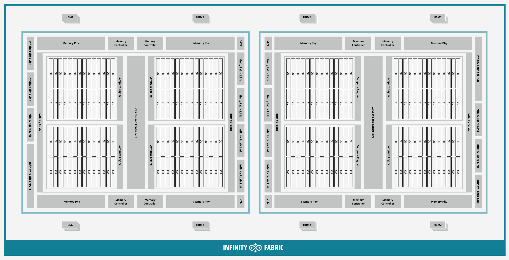
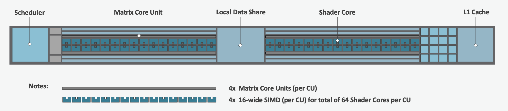
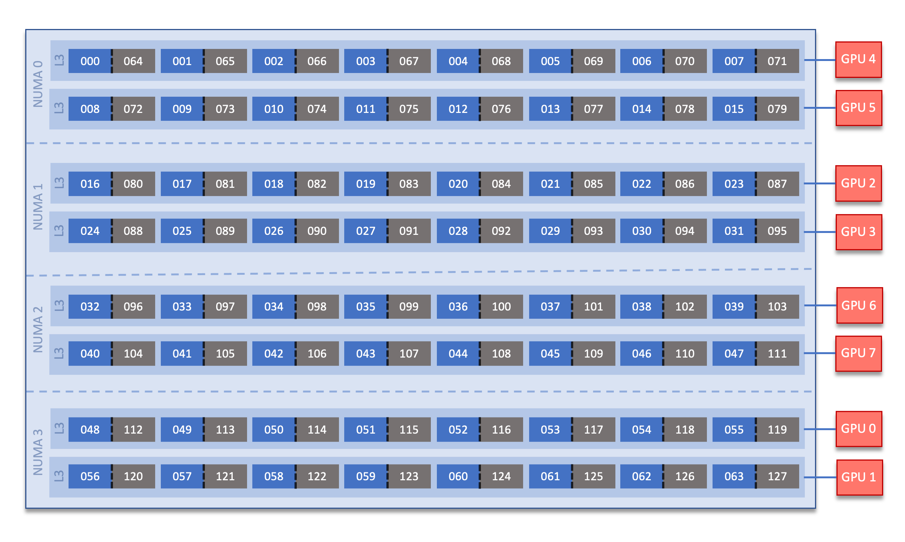

Frontier User Guide
System Overview
Frontier is a HPE Cray EX supercomputer located at the Oak Ridge Leadership Computing Facility. With a theoretical peak double-precision performance of approximately 2 exaflops (2 quintillion calculations per second), it is the fastest system in the world for a wide range of traditional computational science applications. The system has 74 Olympus rack HPE cabinets, each with 128 AMD compute nodes, and a total of 9,408 AMD compute nodes.
Frontier Compute Nodes
Each Frontier compute node consists of [1x] 64-core AMD Optimized 3rd Gen EPYC CPU (with 2 hardware threads per physical core) with access to 512 GB of DDR4 memory. Each node also contains [4x] AMD MI250X, each with 2 Graphics Compute Dies (GCDs) for a total of 8 GCDs per node. The programmer can think of the 8 GCDs as 8 separate GPUs, each having 64 GB of high-bandwidth memory (HBM2E). The CPU is connected to each GCD via Infinity Fabric CPU-GPU, allowing a peak host-to-device (H2D) and device-to-host (D2H) bandwidth of 36+36 GB/s. The 2 GCDs on the same MI250X are connected with Infinity Fabric GPU-GPU with a peak bandwidth of 200 GB/s. The GCDs on different MI250X are connected with Infinity Fabric GPU-GPU in the arrangement shown in the Frontier Node Diagram below, where the peak bandwidth ranges from 50-100 GB/s based on the number of Infinity Fabric connections between individual GCDs.
Note
TERMINOLOGY:
The 8 GCDs contained in the 4 MI250X will show as 8 separate GPUs according to Slurm, ROCR_VISIBLE_DEVICES, and the ROCr runtime, so from this point forward in the quick-start guide, we will simply refer to the GCDs as GPUs.
{kind=link}
Note
There are [4x] NUMA domains per node and [2x] L3 cache regions per NUMA for a total of [8x] L3 cache regions. The 8 GPUs are each associated with one of the L3 regions as follows:
NUMA 0:
hardware threads 000-007, 064-071 | GPU 4
hardware threads 008-015, 072-079 | GPU 5
NUMA 1:
hardware threads 016-023, 080-087 | GPU 2
hardware threads 024-031, 088-095 | GPU 3
NUMA 2:
hardware threads 032-039, 096-103 | GPU 6
hardware threads 040-047, 104-111 | GPU 7
NUMA 3:
hardware threads 048-055, 112-119 | GPU 0
hardware threads 056-063, 120-127 | GPU 1
By default, Frontier reserves the first core in each L3 cache region. Frontier uses low-noise mode,
which constrains all system processes to core 0. Low-noise mode cannot be disabled by users.
In addition, Frontier uses SLURM core specialization (-S 8 flag at job allocation time, e.g., sbatch)
to reserve one core from each L3 cache region, leaving 56 allocatable cores. Set -S 0 at job allocation to override this setting.
Node Types
On Frontier, there are two major types of nodes you will encounter: Login and Compute. While these are similar in terms of hardware (see: Frontier Compute Nodes), they differ considerably in their intended use.
Node Type |
Description |
|---|---|
Login |
When you connect to Frontier, youre placed on a login node. This is the place to write/edit/compile your code, manage data, submit jobs, etc. You should never launch parallel jobs from a login node nor should you run threaded jobs on a login node. Login nodes are shared resources that are in use by many users simultaneously. |
Compute |
Most of the nodes on Frontier are compute nodes. These are where
your parallel job executes. Theyre accessed via the |
System Interconnect
The Frontier nodes are connected with [4x] HPE Slingshot 200 Gbps (25 GB/s) NICs providing a node-injection bandwidth of 800 Gbps (100 GB/s).
File Systems
Frontier is connected to Orion, a parallel filesystem based on Lustre and HPE ClusterStor, with a 679 PB usable
namespace (/lustre/orion/). In addition to Frontier, Orion is available on the OLCFs data transfer nodes and on the Andes cluster.
Orion is not available from Summit and Frontier does not mount Summits Alpine2 filesystem.
Frontier also has access to the center-wide NFS-based filesystem (which provides user and project home areas).
Each compute node has two 1.92TB Non-Volatile Memory storage devices. See Data and Storage for more information.
Projects with a Frontier allocation also receive an archival storage area on Kronos. For more information on using Kronos, see the Kronos Nearline Archival Storage System seciton.
Operating System
Frontier is running Cray OS 2.4 based on SUSE Linux Enterprise Server (SLES) version 15.4.
GPUs
Each Frontier compute node contains 4 AMD MI250X. The AMD MI250X has a peak performance of 47.8 TFLOPS in vector-based double-precision for modeling and simulation. Each MI250X contains 2 GPUs, where each GPU has a peak performance of 23.9 TFLOPS (vector-based double-precision), 110 compute units, and 64 GB of high-bandwidth memory (HBM2) which can be accessed at a peak of 1.6 TB/s. The 2 GPUs on an MI250X are connected with Infinity Fabric with a bandwidth of 200 GB/s (in each direction simultaneously).
Connecting
To connect to Frontier, ssh to frontier.olcf.ornl.gov. For example:
$ ssh <username>@frontier.olcf.ornl.gov
For more information on connecting to OLCF resources, see Connecting for the first time.
By default, connecting to Frontier will automatically place the user on a random login node. If you need to access a specific login node, you will ssh to that node after your intial connection to Frontier.
[<username>@login12.frontier ~]$ ssh <username>@login01.frontier.olcf.ornl.gov
Users can connect to any of the 17 Frontier login nodes by replacing login01 with their login node of choice.
Data and Storage
Transition from Alpine to Orion
Frontier mountsOrion, a parallel filesystem basedon Lustre and HPE ClusterStor, with a 679 PB usable namespace (/lustre/orion/). Inaddition to Frontier, Orion isavailable on the OLCFs data transfer nodes. It is notavailablefrom Summit.
On Alpine, there was no user-exposed concept of file striping, the process of dividing a file between the storage elements of the filesystem. Orion uses a feature called Progressive File Layout (PFL) that changes the striping of files as they grow. Because of this, we ask users not to manually adjust the file striping. If you feel the default striping behavior of Orion is not meeting your needs, please contact help@olcf.ornl.gov.
As with Alpine, files older than 90 days are purged from Orion. Please plan your data management and lifecycle at OLCF before generating the data.
For more detailed information about center-wide file systems and data archiving available on Frontier, please refer to the pages on Data Storage and Transfers. The subsections below give a quick overview of NFS, Lustre, abd archival storage spaces as well as the on node NVMe Burst Buffers (SSDs).
LFS setstripe wrapper
The OLCF provides a wrapper for the lfs setstripe command that simplifies the process of striping files. The wrapper will enforce that certain settings are used to ensure that striping is done correctly. This will help to ensure good performance for users as well as prevent filesystem issues that could arise from incorrect striping practices. The wrapper is accessible via the lfs-wrapper module and will soon be added to the default environment on Frontier.
Orion is different than other Lustre filesystems that you may have used previously. To make effective use of Orion and to help ensure that the filesystem performs well for all users, it is important that you do the following:
Use the capacity OST pool tier (e.g.
lfs setstripe -p capacity)Stripe across no more than 450 OSTs (e.g.
lfs setstripe -c<= 450)
When the module is active in your environment, the wrapper will enforce the above settings. The wrapper will also do the following:
If a user provides a stripe count of -1 (e.g.
lfs setstripe -c -1) the wrapper will set the stripe count to the maximum allowed by the filesystem (currently 450)If a user provides a stripe count of 0 (e.g.
lfs setstripe -c 0) the wrapper will use the OLCF default striping command which has been optimized by the OLCF filesystem managers:lfs setstripe -E 256K -L mdt -E 8M -c 1 -S 1M -p performance -z 64M -E 128G -c 1 -S 1M -z 16G -p capacity -E -1 -z 256G -c 8 -S 1M -p capacity
Please contact the OLCF User Assistance Center if you have any questions about using the wrapper or if you encounter any issues.
NFS Filesystem
Area |
Path |
Type |
Permissions |
Quota |
Backups |
Purged |
Retention |
On Compute Nodes |
|---|---|---|---|---|---|---|---|---|
User Home |
|
NFS |
User set |
50 GB |
Yes |
No |
90 days |
Yes |
Project Home |
|
NFS |
770 |
50 GB |
Yes |
No |
90 days |
Yes |
Note
Though the NFS filesystems User Home and Project Home areas are read/write from Frontiers compute nodes, we strongly recommend that users launch and run jobs from the Lustre Orion parallel filesystem instead due to its larger storage capacity and superior performance. Please see below for Lustre Orion filesystem storage areas and paths.
Lustre Filesystem
Area |
Path |
Type |
Permissions |
Quota |
Backups |
Purged |
Retention |
On Compute Nodes |
|---|---|---|---|---|---|---|---|---|
Member Work |
|
Lustre HPE ClusterStor |
700 |
50 TB |
No |
90 days |
N/A |
Yes |
Project Work |
|
Lustre HPE ClusterStor |
770 |
50 TB |
No |
90 days |
N/A |
Yes |
World Work |
|
Lustre HPE ClusterStor |
775 |
50 TB |
No |
90 days |
N/A |
Yes |
Kronos Archival Storage
Please note that the Kronos is not mounted directly onto Frontier nodes. There are two main methods for accessing and moving data to/from Kronos, either with standard cli utilities (scp, rsync, etc.) and via Globus using the OLCF Kronos collection. For more information on using Kronos, see the Kronos Nearline Archival Storage System section.
Area |
Path |
Type |
Permissions |
Quota |
Backups |
Purged |
Retention |
On Compute Nodes |
|---|---|---|---|---|---|---|---|---|
Member Archive |
|
Nearline |
700 |
200 TB* |
No |
No |
90 days |
No |
Project Archive |
|
Nearline |
770 |
200 TB* |
No |
No |
90 days |
No |
World Archive |
|
Nearline |
775 |
200 TB* |
No |
No |
90 days |
No |
Note
The three archival storage areas above share a single 200TB per project quota.
NVMe
Each compute node on Frontier has [2x] 1.92TBNon-Volatile Memory (NVMe) storage devices (SSDs), colloquially known as a Burst Buffer with a peak sequential performance of 5500 MB/s (read) and 2000 MB/s (write). The purpose of the Burst Buffer system is to bring improved I/O performance to appropriate workloads. Users are not required to use the NVMes. Data can also be written directly to the parallel filesystem.
NVMe Usage
To use the NVMe, users must request access during job allocation using the -C nvme option to sbatch, salloc, or srun. Once the devices have been granted to a job, users can access them at /mnt/bb/<userid>. Users are responsible for moving data to/from the NVMe before/after their jobs. Here is a simple example script:
#!/bin/bash
#SBATCH -A <projid>
#SBATCH -J nvme_test
#SBATCH -o %x-%j.out
#SBATCH -t 00:05:00
#SBATCH -p batch
#SBATCH -N 1
#SBATCH -C nvme
date
# Change directory to user scratch space (GPFS)
cd /gpfs/alpine/<projid>/scratch/<userid>
echo " "
echo "*****ORIGINAL FILE*****"
cat test.txt
echo "***********************"
# Move file from GPFS to SSD
mv test.txt /mnt/bb/<userid>
# Edit file from compute node
srun -n1 hostname >> /mnt/bb/<userid>/test.txt
# Move file from SSD back to GPFS
mv /mnt/bb/<userid>/test.txt .
echo " "
echo "*****UPDATED FILE******"
cat test.txt
echo "***********************"
And here is the output from the script:
$ cat nvme_test-<jobid>.out
*****ORIGINAL FILE*****
This is my file. There are many like it but this one is mine.
***********************
*****UPDATED FILE******
This is my file. There are many like it but this one is mine.
frontier0123
***********************
Using Globus to Move Data to and from Orion
Note
After January 8, the Globus v4 collections will no longer be supported. Please use the OLCF Kronos and OLCF DTN (Globus 5) collections.
The following example is intended to help users move data to and from the Orion filesystem.
Below is a summary of the steps for data transfer using Globus:
1. Login to globus.org using your globus ID and password. If you do not have a globusID, set one up here: Generate a globusID.
Once you are logged in, Globus will open the File Manager page. Click the left side Collection text field in the File Manager and type OLCF DTN (Globus 5).
When prompted, authenticate into the OLCF DTN (Globus 5) collection using your OLCF username and PIN followed by your RSA passcode.
Click in the left side Path box in the File Manager and enter the path to your data on Orion. For example,`/lustre/orion/stf007/proj- shared/my_orion_data`. You should see a list of your files and folders under the left Path Box.
Click on all files or folders that you want to transfer in the list. This will highlight them.
Click on the right side Collection box in the File Manager and type the name of a second collection at OLCF or at another institution. You can transfer data between different paths on the Orion filesystem with this method too; Just use the OLCF DTN (Globus 5) collection again in the right side Collection box.
Click in the right side Path box and enter the path where you want to put your data on the second collections filesystem.
Click the left Start button.
Click on Activity in the left blue menu bar to monitor your transfer. Globus will send you an email when the transfer is complete.
Globus Warnings:
Globus transfers do not preserve file permissions. Arriving files will have (rw-rr) permissions, meaning arriving files will have user read and write permissions and group and world read permissions. Note that the arriving files will not have any execute permissions, so you will need to use chmod to reset execute permissions before running a Globus-transferred executable.
Globus will overwrite files at the destination with identically named source files. This is done without warning.
Globus has restriction of 8 active transfers across all the users. Each user has a limit of 3 active transfers, so it is required to transfer a lot of data on each transfer than less data across many transfers.
If a folder is constituted with mixed files including thousands of small files (less than 1MB each one), it would be better to tar the smallfiles. Otherwise, if the files are larger, Globus will handle them.
AMD GPUs
The AMD Instinct MI200 is built on advanced packaging technologies enabling two Graphic Compute Dies (GCDs) to be integrated into a single package in the Open Compute Project (OCP) Accelerator Module (OAM) in the MI250 and MI250X products. Each GCD is build on the AMD CDNA 2 architecture. A single Frontier node contains 4 MI250X OAMs for the total of 8 GCDs.
Note
The Slurm workload manager and the ROCr runtime treat each GCD as a separate GPU
and visibility can be controlled using the ROCR_VISIBLE_DEVICES environment variable.
Therefore, from this point on, the Frontier guide simply refers to a GCD as a GPU.
Each GPU contains 110 Compute Units (CUs) grouped in 4 Compute Engines (CEs). Physically, each GPU contains 112 CUs, but two are disabled. A command processor in each GPU receives API commands and transforms them into compute tasks. Compute tasks are managed by the 4 compute engines, which dispatch wavefronts to compute units. All wavefronts from a single workgroup are assigned to the same CU. In CUDA terminology, workgroups are blocks, wavefronts are warps, and work-items are threads. The terms are often used interchangeably.
The 110 CUs in each GPU deliver peak performance of 23.9 TFLOPS in double precision, or 47.9 TFLOPS if using the specialized Matrix cores. Also, each GPU contains 64 GB of high-bandwidth memory (HBM2) accessible at a peak bandwidth of 1.6 TB/s. The 2 GPUs in an MI250X are connected with [4x] GPU-to-GPU Infinity Fabric links providing 200+200 GB/s of bandwidth. (Consult the diagram in the Frontier Compute Nodes section for information on how the accelerators are connected to each other, to the CPU, and to the network.
Note
The X+X GB/s notation describes bidirectional bandwidth, meaning X GB/s in each direction.
AMD vs NVIDIA Terminology
AMD |
NVIDIA |
|---|---|
Work-items or Threads |
Threads |
Workgroup |
Block |
Wavefront |
Warp |
Grid |
Grid |
We will be using these terms interchangeably as they refer to the same concepts in GPU programming, with the exception that we will only be using wavefront (which refers to a unit of 64 threads) instead of warp (which refers to a unit of 32 threads) as they mean different things.
Blocks (workgroups), Threads (work items), Grids, Wavefronts
When kernels are launched on a GPU, a grid of thread blocks are created, where the number of thread blocks in the grid and the number of threads within each block are defined by the programmer. The number of blocks in the grid (grid size) and the number of threads within each block (block size) can be specified in one, two, or three dimensions during the kernel launch. Each thread can be identified with a unique id within the kernel, indexed along the X, Y, and Z dimensions.
Number of blocks that can be specified along each dimension in a grid: (2147483647, 65536, 65536)
Max number of threads that can be specified along each dimension in a block: (1024, 1024, 1024)
However, the total of number of threads in a block has an upper limit of 1024 [i.e. (size of x dimension * size of y dimension * size of z dimension) cannot exceed 1024].
And the total number of threads in a kernel launch has an upper limit of 2147483647.
Each block (or workgroup) of threads is assigned to a single Compute Unit i.e. a single block wont be split across multiple CUs. The threads in a block are scheduled in units of 64 threads called wavefronts (similar to warps in CUDA, but warps only have 32 threads instead of 64). When launching a kernel, up to 64KB of block level shared memory called the Local Data Store (LDS) can be statically or dynamically allocated. This shared memory between the threads in a block allows the threads to access block local data with much lower latency compared to using the HBM since the data is in the compute unit itself.
The Compute Unit
Each CU has 4 Matrix Core Units (the equivalent of NVIDIAs Tensor core units) and 4 16-wide SIMD units. For a vector instruction that uses the SIMD units, each wavefront (which has 64 threads) is assigned to a single 16-wide SIMD unit such that the wavefront as a whole executes the instruction over 4 cycles, 16 threads per cycle. Since other wavefronts occupy the other three SIMD units at the same time, the total throughput still remains 1 instruction per cycle. Each CU maintains an instructions buffer for 8 wavefronts and also maintains 256 registers where each register is 64 4-byte wide entries.
HIP
The Heterogeneous Interface for Portability (HIP) is AMDs dedicated GPU programming environment for designing high performance kernels on GPU hardware. HIP is a C++ runtime API and programming language that allows developers to create portable applications on different platforms, including the AMD MI250X. This means that developers can write their GPU applications and with very minimal changes be able to run their code in any environment. The API is very similar to CUDA, so if youre already familiar with CUDA there is almost no additional work to learn HIP. See here for a series of tutorials on programming with HIP and also converting existing CUDA code to HIP with the hipify tools .
Things To Remember When Programming for AMD GPUs
The MI250X has different denormal handling for FP16 and BF16 datatypes, which is relevant for ML training. Prefer using the BF16 over the FP16 datatype for ML models as you are more likely to encounter denormal values with FP16 (which get flushed to zero, causing failure in convergence for some ML models). See more in Using reduced precision (FP16 and BF16 datatypes).
Memory can be automatically migrated to GPU from CPU on a page fault if XNACK operating mode is set. No need to explicitly migrate data or provide managed memory. This is useful if youre migrating code from a programming model that relied on unified or managed memory. See more in Enabling GPU Page Migration. Information about how memory is accessed based on the allocator used and the XNACK mode can be found in Migration of Memory by Allocator and XNACK Mode.
HIP has two kinds of memory allocations, coarse grained and fine grained, with tradeoffs between performance and coherence. Particularly relevant if you want to ues the hardware FP atomic instructions. See more in Floating-Point (FP) Atomic Operations and Coarse/Fine Grained Memory Allocations.
FP32 atomicAdd operations on Local Data Store (i.e. block shared memory) can be slower than the equivalent FP64 operations. See more in Performance considerations for LDS FP atomicAdd().
See the Compiling section for information on compiling for AMD GPUs, and see the Tips and Tricks section for some detailed information to keep in mind to run more efficiently on AMD GPUs.
Programming Environment
Frontier users are provided with many pre-installed software packages and scientific libraries. To facilitate this, environment management tools are used to handle necessary changes to the shell.
Environment Modules (Lmod)
Environment modules are provided through Lmod, a Lua-based module system for dynamically altering shell environments. By managing changes to the shells environment variables (such as PATH, LD_LIBRARY_PATH, and PKG_CONFIG_PATH), Lmod allows you to alter the software available in your shell environment without the risk of creating package and version combinations that cannot coexist in a single environment.
General Usage
The interface to Lmod is provided by the module command:
Command |
Description |
|---|---|
|
Shows a terse list of the currently loaded modules |
|
Shows a table of the currently available modules |
|
Shows help information about |
|
Shows the environment changes made by the |
|
Searches all possible modules according to |
|
Loads the given |
|
Adds |
|
Removes |
|
Unloads all modules |
|
Resets loaded modules to system defaults |
|
Reloads all currently loaded modules |
Searching for Modules
Modules with dependencies are only available when the underlying dependencies, such as compiler families, are loaded. Thus, module avail will only display modules that are compatible with the current state of the environment. To search the entire hierarchy across all possible dependencies, the spider sub-command can be used as summarized in the following table.
Command |
Description |
|---|---|
|
Shows the entire possible graph of modules |
|
Searches for modules named |
|
Searches for a specific version of |
|
Searches for modulefiles containing |
Note
Due to the implementation of the module heirarchy on Frontier, module spider does not currently locate OLCF-provided Spack-built modulefiles in /sw/frontier.
Compilers
Cray, AMD, and GCC compilers are provided through modules on Frontier. The Cray and AMD compilers are both based on LLVM/Clang. There is also a system/OS versions of GCC available in /usr/bin. The table below lists details about each of the module-provided compilers. Please see the following Compiling section for more detailed inforation on how to compile using these modules.
Cray Programming Environment and Compiler Wrappers
Cray provides PrgEnv-<compiler> modules (e.g., PrgEnv-cray) that load compatible components of a specific compiler toolchain. The components include the specified compiler as well as MPI, LibSci, and other libraries. Loading the PrgEnv-<compiler> modules also defines a set of compiler wrappers for that compiler toolchain that automatically add include paths and link in libraries for Cray software. Compiler wrappers are provided for C (cc), C++ (CC), and Fortran (ftn).
Note
Use the -craype-verbose flag to display the full include and link information used by the Cray compiler wrappers. This must be called on a file to see the full output (e.g., CC -craype-verbose test.cpp).
MPI
The MPI implementation available on Frontier is Crays MPICH, which is GPU-aware so GPU buffers can be passed directly to MPI calls.
Compiling
Compilers
Cray, AMD, and GCC compilers are provided through modules on Frontier. The Cray and AMD compilers are both based on LLVM/Clang. There is also a system/OS versions of GCC available in /usr/bin. The table below lists details about each of the module-provided compilers.
Note
It is highly recommended to use the Cray compiler wrappers (cc, CC, and ftn) whenever possible. See the next section for more details.
Vendor |
Programming Environment |
Compiler Module |
Language |
Compiler Wrapper |
Compiler |
|---|---|---|---|---|---|
Cray |
|
|
C |
|
|
C++ |
|
|
|||
Fortran |
|
|
|||
AMD |
|
|
C |
|
|
C++ |
|
|
|||
Fortran |
|
|
|||
GCC |
|
|
C |
|
|
C++ |
|
|
|||
Fortran |
|
|
Note
The gcc-native compiler module was introduced in the December 2023 release of the HPE/Cray Programming Environment (CrayPE) and replaces gcc.
gcc provides GCC installations that were packaged within CrayPE, while gcc-native provides GCC installations outside of CrayPE.
Cray Programming Environment and Compiler Wrappers
Cray provides PrgEnv-<compiler> modules (e.g., PrgEnv-cray) that load compatible components of a specific compiler toolchain. The components include the specified compiler as well as MPI, LibSci, and other libraries. Loading the PrgEnv-<compiler> modules also defines a set of compiler wrappers for that compiler toolchain that automatically add include paths and link in libraries for Cray software. Compiler wrappers are provided for C (cc), C++ (CC), and Fortran (ftn).
For example, to load the AMD programming environment, do:
module load PrgEnv-amd
This module will setup your programming environment with paths to software and libraries that are compatible with AMD host compilers.
When loading non-default versions of Cray-provided components, please see Understanding the Compatibility of Compilers, ROCm, and Cray MPICH for information about loading a set of compatible Cray modules.
Note
Use the -craype-verbose flag to display the full include and link information used by the Cray compiler wrappers. This must be called on a file to see the full output (e.g., CC -craype-verbose test.cpp).
Exposing The ROCm Toolchain to yourProgrammingEnvironment
If you need to add thetoolsand libraries related to ROCm, the framework for targeting AMD GPUs, to your path, you will need to use a version of ROCm that is compatible with your programming environment.
ROCm can be loaded with: module load rocm/X.Y.Z, or to load the default ROCm version, module load rocm.
Note
Both the CCE and ROCm compilers are Clang-based, so please be sure to use consistent (major) Clang versions when using them together. You can check which version of Clang is being used with CCE and ROCm by giving the --version flag to CC and amdclang, respectively.
Please see Understanding the Compatibility of Compilers, ROCm, and Cray MPICH for information about loading a compatible set of modules.
MPI
The MPI implementation available on Frontier is Crays MPICH, which is GPU-aware so GPU buffers can be passed directly to MPI calls.
Implementation |
Module |
Compiler |
Header Files & Linking |
|---|---|---|---|
Cray MPICH |
|
|
MPI header files and linking is built into the Cray compiler wrappers |
|
-L${MPICH_DIR}/lib -lmpi${CRAY_XPMEM_POST_LINK_OPTS} -lxpmem${PE_MPICH_GTL_DIR_amd_gfx90a} ${PE_MPICH_GTL_LIBS_amd_gfx90a}-I${MPICH_DIR}/include |
Note
hipcc requires the ROCm Toolclain, See Exposing The ROCm Toolchain to yourProgrammingEnvironment
GPU-Aware MPI
To use GPU-aware Cray MPICH with Frontiers PrgEnv modules, users must set the following modules and environment variables:
module load craype-accel-amd-gfx90a
module load rocm
export MPICH_GPU_SUPPORT_ENABLED=1
Note
There are extra steps needed to enable GPU-aware MPI on Frontier, which depend on the compiler that is used (see 1. and 2. below).
1. Compiling with the Cray compiler wrappers, cc or CC
When using GPU-aware Cray MPICH with the Cray compiler wrappers, most of the needed libraries are automatically linked through the environment variables.
Though, the following header files and libraries must be included explicitly:
-I${ROCM_PATH}/include
-L${ROCM_PATH}/lib -lamdhip64
where the include path implies that #include <hip/hip_runtime.h> is included in the source file.
2. Compiling without the Cray compiler wrappers, e.g. hipcc
To use hipcc with GPU-aware Cray MPICH, the following is needed to setup the needed header files and libraries.
-I${MPICH_DIR}/include
-L${MPICH_DIR}/lib -lmpi \
${CRAY_XPMEM_POST_LINK_OPTS} -lxpmem \
${PE_MPICH_GTL_DIR_amd_gfx90a} ${PE_MPICH_GTL_LIBS_amd_gfx90a}
HIPFLAGS = --offload-arch=gfx90a
Understanding the Compatibility of Compilers, ROCm, and Cray MPICH
There are three primary sources of compatibility required to successfully build and run on Frontier:
Compatible Compiler & ROCm toolchain versions
Compatible ROCm & Cray MPICH versions
Compatibility with other CrayPE-provided software
Note
If using non-default versions of any cray-* module, you must prepend ${CRAY_LD_LIBRARY_PATH} (or the path to lib64 for your specific cray-* component) to your LD_LIBRARY_PATH at run time or your executables rpath at build time.
Compatible Compiler & ROCm toolchain versions
All compilers in the same HPE/Cray Programming Environment (CrayPE) release are generally ABI-compatible (e.g. code generated by CCE can be linked against code compiled by GCC).
However, the AMD and CCE compilers are both LLVM/Clang-based, and it is recommended to use the same major LLVM version when cross-compiling.
CCEs module version indicates the base LLVM version, but for AMD, you must run amdclang --version.
For example, ROCm/5.3.0 is based on LLVM 15.0.0.
It is strongly discouraged to use ROCm/5.3.0 with CCE/16.0.1, which is based on LLVM 16.
The following table shows the recommended ROCm version for each CCE version, along with the CPE version:
CCE |
CPE |
Recommended ROCm Version |
|---|---|---|
15.0.0 |
22.12 |
5.3.0 |
15.0.1 |
23.03 |
5.3.0 |
16.0.0 |
23.05 |
5.5.1 |
16.0.1 |
23.09 |
5.5.1 |
17.0.0 |
23.12 |
5.7.0 or 5.7.1 |
17.0.1 |
24.03 |
6.0.0 |
18.0.0 |
24.07 |
6.1.3 |
Note
Recall that the CPE module is a meta-module that simple loads the correct version for each Cray-provided module (e.g. CCE, Cray MPICH, Cray Libsci). This is the best way to load the versions of modules from a specific CrayPE release.
Compatible ROCm & Cray MPICH versions
Compatibility between Cray MPICH and ROCm is required in order to use GPU-aware MPI.
Releases of cray-mpich are each compiled using a specific version of ROCm, and compatibility across multiple versions is not guaranteed.
OLCF will maintain compatible default modules when possible.
If using non-default modules, you can determine compatibility by reviewing the Product and OS Dependencies section in the cray-mpich release notes.
This can be displayed by running module show cray-mpich/<version>. If the notes indicate compatibility with AMD ROCM X.Y or later, only use rocm/X.Y.Z modules.
If you are loading compatible ROCm and Cray MPICH versions but still getting errors, try setting MPICH_VERSION_DISPLAY=1 to verify the correct Cray MPICH version is being used at run-time.
If it is not, verify you are prepending LD_LIBRARY_PATH with CRAY_LD_LIBRARY_PATH or ${MPICH_DIR}/lib.
The following compatibility table below was determined by testing of the linker and basic GPU-aware MPI functions with all current combinations of cray-mpich and ROCm modules on Frontier.
Alongside cray-mpich, we load the corresponding cpe module, which loads other important modules for MPI such as cray-pmi and craype.
It is strongly encouraged to load a cpe module when using non-default modules.
This ensures that all CrayPE-provided modules are compatible.
An asterisk indicates the latest officially supported version of ROCm for each cray-mpich version.
cray-mpich |
cpe |
ROCm |
|---|---|---|
8.1.23 |
22.12 |
5.4.3, 5.4.0, 5.3.0* |
8.1.25 |
23.03 |
5.4.3, 5.4.0*, 5.3.0 |
8.1.26 |
23.05 |
5.7.1, 5.7.0, 5.6.0, 5.5.1*, 5.4.3, 5.4.0, 5.3.0 |
8.1.27 |
23.09 |
5.7.1, 5.7.0, 5.6.0, 5.5.1*, 5.4.3, 5.4.0, 5.3.0 |
8.1.28 |
23.12 |
5.7.1, 5.7.0*, 5.6.0, 5.5.1, 5.4.3, 5.4.0, 5.3.0 |
8.1.29 |
24.03 |
6.1.3, 6.0.0* |
8.1.30 |
24.07 |
6.1.3*, 6.0.0 |
Note
OLCF recommends using the officially supported ROCm version (with asterisk) for each cray-mpich version.
Newer versions were tested using a sample of MPI operations and there may be undiscovered incompatibility.
Compatibility with other CrayPE-provided Software
The HPE/Cray Programming Environment (CrayPE) provides many libraries for use on Frontier, including the well-known libraries like Cray MPICH, Cray Libsci, and Cray FFTW.
CrayPE also has many modules that operate in the background and can easily be overlooked.
For example, the craype module provides the cc, CC, and ftn Cray compiler drivers.
These drivers are written to link to specific libraries (e.g. the ftn wrapper in September 2023 PE links to libtcmalloc_minimal.so),
which may not be needed by compiler versions other than the one they were released with.
For the full compatibility of your loaded CrayPE environment, we strongly recommended loading the cpe module of your desired CrayPE release (version is the last two digits of the year and the two-digit month, e.g. September 2023 is version 23.09).
For example, to load the September 2023 PE (CCE 16.0.1, Cray MPICH 8.1.27, ROCm 5.5.1 compatibility),
you would run the following commands:
module load PrgEnv-cray
# Load the cpe module after your desired PE, but before rocm -- sometimes cpe attempts to set a rocm version
module load cpe/23.09
module load rocm/5.5.1
# Since these modules are not default, make sure to prepend CRAY_LD_LIBRARY_PATH to LD_LIBRARY_PATH
export LD_LIBRARY_PATH=${CRAY_LD_LIBRARY_PATH}:${LD_LIBRARY_PATH}
OpenMP
This section shows how to compile with OpenMP using the different compilers covered above.
Vendor |
Module |
Language |
Compiler |
OpenMP flag (CPU thread) |
|---|---|---|---|---|
Cray |
|
C, C++ |
cc (wraps craycc)CC (wraps crayCC) |
|
Fortran |
|
-homp-fopenmp (alias) |
||
AMD |
|
C
C++
Fortran
|
cc (wraps amdclang)CC (wraps amdclang++)ftn (wraps amdflang) |
|
GCC |
|
C
C++
Fortran
|
cc (wraps $GCC_PATH/bin/gcc)CC (wraps $GCC_PATH/bin/g++)ftn (wraps $GCC_PATH/bin/gfortran) |
|
OpenMP GPU Offload
This section shows how to compile with OpenMP Offload using the different compilers covered above.
Note
Make sure the craype-accel-amd-gfx90a module is loaded when using OpenMP offload.
Vendor |
Module |
Language |
Compiler |
OpenMP flag (GPU) |
|---|---|---|---|---|
Cray |
|
C C++ |
cc (wraps craycc)CC (wraps crayCC) |
|
Fortran |
|
-homp-fopenmp (alias) |
||
AMD |
|
C
C++
Fortran
|
cc (wraps amdclang)CC (wraps amdclang++)ftn (wraps amdflang)hipcc (requires flags below) |
|
Note
If invoking amdclang, amdclang++, or amdflang directly for openmp offload, or using hipcc you will need to add:
-fopenmp -fopenmp-targets=amdgcn-amd-amdhsa -Xopenmp-target=amdgcn-amd-amdhsa -march=gfx90a.
OpenACC
This section shows how to compile code with OpenACC. Currently only the Cray compiler supports OpenACC for Fortran. The AMD and
GNU programming environments do not support OpenACC at all.
C and C++ support for OpenACC is provided by clacc which maintains a fork of the LLVM
compiler with added support for OpenACC. It can be obtained by loading the UMS modules
ums, ums025, and clacc.
Vendor |
Module |
Language |
Compiler |
Flags |
Support |
|---|---|---|---|---|---|
Cray |
|
C, C++ |
No support |
||
Fortran |
|
-h acc |
Full support for OpenACC 2.0 Partial support for OpenACC 2.x/3.x |
||
UMS module |
|
C, C++ |
|
-fopenacc |
|
Fortran |
No support |
HIP
This section shows how to compile HIP codes using the Cray compiler wrappers and hipcc compiler driver.
Note
Make sure the craype-accel-amd-gfx90a module is loaded when compiling HIP with the Cray compiler wrappers.
Compiler |
Compile/Link Flags, Header Files, and Libraries |
|---|---|
CCOnly with
PrgEnv-crayPrgEnv-amd |
CFLAGS = -std=c++11 -D__HIP_ROCclr__ -D__HIP_ARCH_GFX90A__=1 --rocm-path=${ROCM_PATH} --offload-arch=gfx90a -x hipLFLAGS = --rocm-path=${ROCM_PATH}-L${ROCM_PATH}/lib -lamdhip64 |
|
Can be used directly to compile HIP source files.
To see what is being invoked within this compiler driver, issue the command,
hipcc --verboseTo explicitly target AMD MI250X, use
--offload-arch=gfx90a |
Note
hipcc requires the ROCm Toolclain, See Exposing The ROCm Toolchain to yourProgrammingEnvironment
Note
Information about compiling code for different XNACK modes (which control page migration between GPU and CPU memory) can be found in the Compiling HIP kernels for specific XNACK modes section.
HIP + OpenMP CPU Threading
This section shows how to compile HIP + OpenMP CPU threading hybrid codes.
Note
Make sure the craype-accel-amd-gfx90a module is loaded when compiling HIP with the Cray compiler wrappers.
Vendor |
Compiler |
Compile/Link Flags, Header Files, and Libraries |
|---|---|---|
AMD/Cray |
|
CFLAGS = -std=c++11 -D__HIP_ROCclr__ -D__HIP_ARCH_GFX90A__=1 --rocm-path=${ROCM_PATH} --offload-arch=gfx90a -x hip -fopenmpLFLAGS = --rocm-path=${ROCM_PATH} -fopenmp-L${ROCM_PATH}/lib -lamdhip64 |
|
Can be used to directly compile HIP source files, add
-fopenmp flag to enable OpenMP threadingTo explicitly target AMD MI250X, use
--offload-arch=gfx90a |
|
GNU |
|
The GNU compilers cannot be used to compile HIP code, so all HIP kernels must be separated from CPU code.
During compilation, all non-HIP files must be compiled with
CC while HIP kernels must be compiled with hipcc.Then linking must be performed with the
CC wrapper.NOTE: When using
cmake, HIP code must currently be compiled using amdclang++ instead of hipcc. |
Note
hipcc requires the ROCm Toolclain, See Exposing The ROCm Toolchain to yourProgrammingEnvironment
SYCL
This section shows how to compile SYCL codes using the oneAPI DPC++ compiler.
Note
Setup and load the oneAPI and ROCm modules:
module use /sw/frontier/ums/ums015/modulefiles
module load oneapi/tbb oneapi/oclfpga oneapi/compiler-rt oneapi/compiler
module load rocm/5.4.3
Compiler |
Compile/Link Flags, Header Files, and Libraries |
|---|---|
|
|
Additional documentation on the DPC++ support for AMD can be found on Codeplays developer website, in particular the pages covering common optimizations or troubleshooting can be helpful.
Running Jobs
Computational work on Frontier is performed by jobs. Jobs typically consist of several componenets:
A batch submission script
A binary executable
A set of input files for the executable
A set of output files created by the executable
In general, the process for running a job is to:
Prepare executables and input files.
Write a batch script.
Submit the batch script to the batch scheduler.
Optionally monitor the job before and during execution.
The following sections describe in detail how to create, submit, and manage jobs for execution on Frontier. Frontier uses SchedMDs Slurm Workload Manager as the batch scheduling system.
Login vs Compute Nodes
Recall from the System Overview that Frontier contains two node types: Login and Compute. When you connect to the system, you are placed on a login node. Login nodes are used for tasks such as code editing, compiling, etc. They are shared among all users of the system, so it is not appropriate to run tasks that are long/computationally intensive on login nodes. Users should also limit the number of simultaneous tasks on login nodes (e.g. concurrent tar commands, parallel make
Compute nodes are the appropriate place for long-running, computationally-intensive tasks. When you start a batch job, your batch script (or interactive shell for batch-interactive jobs) runs on one of your allocated compute nodes.
Warning
Compute-intensive, memory-intensive, or other disruptive processes running on login nodes may be killed without warning.
Note
Unlike Summit and Titan, there are no launch/batch nodes on Frontier. This means your batch script runs on a node allocated to you rather than a shared node. You still must use the job launcher (srun) to run parallel jobs across all of your nodes, but serial tasks need not be launched with srun.
Simplified Node Layout
To easily visualize job examples (see Process and Thread Mapping Examples further below), the compute node diagram has been simplified to the picture shown below.
{kind=link}
In the diagram, each physical core on a Frontier compute node is composed of two logical cores that are represented by a pair of blue and grey boxes. For a given physical core, the blue box represents the logical core of the first hardware thread, where the grey box represents the logical core of the second hardware thread.
Low-noise Mode Layout
Frontier uses low-noise mode and core specialization (-S flag at job
allocation, e.g., sbatch). Low-noise mode constrains all system processes
to core 0. Core specialization (by default, -S 8) reserves the first core
in each L3 region. This prevents the user running on the core that system
processes are constrained to. This also means that there are only 56
allocatable cores by default instead of 64. Therefore, this modifies the
simplified node layout to:

To override this default layout (not recommended), set -S 0 at job allocation.
Slurm
Frontier uses SchedMDs Slurm Workload Manager for scheduling and managing jobs. Slurm maintains similar functionality to other schedulers such as IBMs LSF, but provides unique control of Frontiers resources through custom commands and options specific to Slurm. A few important commands can be found in the conversion table below, but please visit SchedMDs Rosetta Stone of Workload Managers for a more complete conversion reference.
Slurm documentation for each command is available via the man utility, and on the web at https://slurm.schedmd.com/man_index.html. Additional documentation is available at https://slurm.schedmd.com/documentation.html.
Some common Slurm commands are summarized in the table below. More complete examples are given in the Monitoring and Modifying Batch Jobs section of this guide.
Command |
Action/Task |
LSF Equivalent |
|---|---|---|
|
Show the current queue |
|
|
Submit a batch script |
|
|
Submit an interactive job |
|
|
Launch a parallel job |
|
|
Show node/partition info |
|
|
View accounting information for jobs/job steps |
|
|
Cancel a job or job step |
|
|
View or modify job configuration. |
|
Batch Scripts
The most common way to interact with the batch system is via batch scripts. A batch script is simply a shell script with added directives to request various resoruces from or provide certain information to the scheduling system. Aside from these directives, the batch script is simply the series of commands needed to set up and run your job.
To submit a batch script, use the command sbatch myjob.sl
Consider the following batch script:
1#!/bin/bash
2#SBATCH -A ABC123
3#SBATCH -J RunSim123
4#SBATCH -o %x-%j.out
5#SBATCH -t 1:00:00
6#SBATCH -p batch
7#SBATCH -N 1024
8
9cd $MEMBERWORK/abc123/Run.456
10cp $PROJWORK/abc123/RunData/Input.456 ./Input.456
11srun ...
12cp my_output_file $PROJWORK/abc123/RunData/Output.456
In the script, Slurm directives are preceded by #SBATCH, making them appear as comments to the shell. Slurm looks for these directives through the first non-comment, non-whitespace line. Options after that will be ignored by Slurm (and the shell).
Line |
Description |
|---|---|
1 |
Shell interpreter line |
2 |
OLCF project to charge |
3 |
Job name |
4 |
Job standard output file ( |
5 |
Walltime requested (in |
6 |
Partition (queue) to use |
7 |
Number of compute nodes requested |
8 |
Blank line |
9 |
Change into the run directory |
10 |
Copy the input file into place |
11 |
Run the job ( add layout details ) |
12 |
Copy the output file to an appropriate location. |
Interactive Jobs
Most users will find batch jobs an easy way to use the system, as they allow you to hand off a job to the scheduler, allowing them to focus on other tasks while their job waits in the queue and eventually runs. Occasionally, it is necessary to run interactively, especially when developing, testing, modifying or debugging a code.
Since all compute resources are managed and scheduled by Slurm, it is not possible to simply log into the system and immediately begin running parallel codes interactively. Rather, you must request the appropriate resources from Slurm and, if necessary, wait for them to become available. This is done through an interactive batch job. Interactive batch jobs are submitted with the salloc command. Resources are requested via the same options that are passed via #SBATCH in a regular batch script (but without the #SBATCH prefix). For example, to request an interactive batch job with the same resources that the batch script above requests, you would use salloc -A ABC123 -J RunSim123 -t 1:00:00 -p batch -N 1024. Note there is no option for an output fileyou are running interactively, so standard output and standard error will be displayed to the terminal.
Warning
Indicating your shell in your salloc command is NOT recommended (e.g., salloc ... /bin/bash). Doing so causes your compute job to start on a login node by default rather than automatically moving you to a compute node.
Common Slurm Options
The table below summarizes options for submitted jobs. Unless otherwise noted, they can be used for either batch scripts or interactive batch jobs. For scripts, they can be added on the sbatch command line or as a #BSUB directive in the batch script. (If theyre specified in both places, the command line takes precedence.) This is only a subset of all available options. Check the Slurm Man Pages for a more complete list.
Option |
Example Usage |
Description |
|---|---|---|
|
|
Specifies the project to which the job should be charged |
|
|
Request 1024 nodes for the job |
|
|
Request a walltime of 4 hours. Walltime requests can be specified as minutes, hours:minutes, hours:minuts:seconds days-hours, days-hours:minutes, or days-hours:minutes:seconds |
|
|
Number of active hardware threads per core. Can be 1 or 2 (1 is default)
Must be used if using
--threads-per-core=2 in your srun command. |
|
|
Specify job dependency (in this example, this job cannot start until job 12345 exits with an exit code of 0. See the Job Dependency section for more information |
|
|
Request the burst buffer/NVMe on each node be made available for your job. See the Burst Buffers section for more information on using them. |
|
|
Specify the job name (this will show up in queue listings) |
|
|
File where job STDOUT will be directed (%j will be replaced with the job ID). If no -e option is specified, job STDERR will be placed in this file, too. |
|
|
File where job STDERR will be directed (%j will be replaced with the job ID). If no -o option is specified, job STDOUT will be placed in this file, too. |
|
|
Send email for certain job actions. Can be a comma-separated list. Actions include BEGIN, END, FAIL, REQUEUE, INVALID_DEPEND, STAGE_OUT, ALL, and more. |
|
|
Email address to be used for notifications. |
|
|
Instructs Slurm to run a job on nodes that are part of the specified reservation. |
|
|
Instructs Slurm to reserve a specific number of cores per node (default is 8). Reserved cores cannot be used by the application. |
|
|
Send the given signal to a job the specified time (in seconds) seconds before the
job reaches its walltime. The signal can be by name or by number (i.e. both 10 and
USR1 would send SIGUSR1).
Signaling a job can be used, for example, to force a job to write a checkpoint just
before Slurm kills the job (note that this option only sends the signal; the user
must still make sure their job script traps the signal and handles it in the desired
manner).
When used with
sbatch, the signal can be prefixed by B:
(e.g. --signal=B:USR1@300) to tell Slurm to signal only the batch shell;
otherwise all processes will be signaled. |
Slurm Environment Variables
Slurm reads a number of environment variables, many of which can provide the same information as the job options noted above. We recommend using the job options rather than environment variables to specify job options, as it allows you to have everything self-contained within the job submission script (rather than having to remember what options you set for a given job).
Slurm also provides a number of environment variables within your running job. The following table summarizes those that may be particularly useful within your job (e.g. for naming output log files):
Variable |
Description |
|---|---|
|
The directory from which the batch job was submitted. By default, a new job starts
in your home directory. You can get back to the directory of job submission with
|
|
The jobs full identifier. A common use for |
|
The number of nodes requested. |
|
The job name supplied by the user. |
|
The list of nodes assigned to the job. |
Job States
A job will transition through several states during its lifetime. Common ones include:
State Code |
State |
Description |
|---|---|---|
CA |
Canceled |
The job was canceled (couldve been by the user or an administrator) |
CD |
Completed |
The job completed successfully (exit code 0) |
CG |
Completing |
The job is in the process of completing (some processes may still be running) |
PD |
Pending |
The job is waiting for resources to be allocated |
R |
Running |
The job is currently running |
Job Reason Codes
In addition to state codes, jobs that are pending will have a reason code to explain why the job is pending. Completed jobs will have a reason describing how the job ended. Some codes you might see include:
Reason |
Meaning |
|---|---|
Dependency |
Job has dependencies that have not been met |
JobHeldUser |
Job is held at users request |
JobHeldAdmin |
Job is held at system administrators request |
Priority |
Other jobs with higher priority exist for the partition/reservation |
Reservation |
The job is waiting for its reservation to become available |
AssocMaxJobsLimit |
The job is being held because the user/project has hit the limit on running jobs |
ReqNodeNotAvail |
The requested a particular node, but its currently unavailable (its in use, reserved, down, draining, etc.) |
JobLaunchFailure |
Job failed to launch (could due to system problems, invalid program name, etc.) |
NonZeroExitCode |
The job exited with some code other than 0 |
Many other states and job reason codes exist. For a more complete description, see the squeue man page (either on the system or online).
Scheduling Policy
In a simple batch queue system, jobs run in a first-in, first-out (FIFO) order. This can lead to inefficient use of the system. If a large job is the next to run, a strict FIFO queue can cause nodes to sit idle while waiting for the large job to start. Backfilling would allow smaller, shorter jobs to use those resources that would otherwise remain idle until the large job starts. With the proper algorithm, they would do so without impacting the start time of the large job. While this does make more efficient use of the system, it encourages the submission of smaller jobs.
The DOE Leadership-Class Job Mandate
As a DOE Leadership Computing Facility, OLCF has a mandate that a large portion of Frontiers usage come from large, leadership-class (a.k.a. capability) jobs. To ensure that OLCF complies with this directive, we strongly encourage users to run jobs on Frontier that are as large as their code will allow. To that end, OLCF implements queue policies that enable large jobs to run in a timely fashion.
Note
The OLCF implements queue policies that encourage the submission and timely execution of large, leadership-class jobs on Frontier.
The basic priority mechanism for jobs waiting in the queue is the time the job has been waiting in the queue. If your jobs require resources outside these policies such as higher priority or longer walltimes, please contact help@olcf.ornl.gov
Job Priority by Node Count
Jobs are aged according to the jobs requested node count (older age equals higher queue priority). Each jobs requested node count places it into a specific bin. Each bin has a different aging parameter, which all jobs in the bin receive.
Bin |
Min Nodes |
Max Nodes |
Max Walltime (Hours) |
Aging Boost (Days) |
|---|---|---|---|---|
1 |
5,645 |
9,408 |
12.0 |
8 |
2 |
1,882 |
5,644 |
12.0 |
4 |
3 |
184 |
1,881 |
12.0 |
0 |
4 |
92 |
183 |
6.0 |
0 |
5 |
1 |
91 |
2.0 |
0 |
batch Partition (queue) Policy
The batch partition (queue) is the default partition for production work on Frontier. Most work on Frontier is handled through this partition. The following policies are enforced for the batch partition:
Limit of four eligible-to-run jobs per user. (Jobs in excess of this number will be held, but will move to the eligible-to-run state at the appropriate time.)
Users may have only 100 jobs queued across all partitions at any time (this includes jobs in all states) i.e. jobs submitted in different partitions on Frontier are added up together to check if its within the 100 queued jobs limit. Additional jobs will be rejected at submit time.
extended Partition (queue) Policy
The extended partition (queue) is designated for smaller long-running jobs on Frontier. The following policies are enforced for the extended partition:
24-Hour maximum wall time for each queued job.
64-Node maximum job size for each queued job.
Each user will be allowed 1 running job and 1 eligible-to-run job at a given time. Any additional queued jobs will be held in an ineligible state until the previous job runs.
Users may have only 100 jobs queued across all partitions at any time (this includes jobs in all states) i.e. jobs submitted in different partitions on Frontier are added up together to check if its within the 100 queued jobs limit. Additional jobs will be rejected at submit time.
debug Quality of Service Class
The debug quality of service (QOS) class can be used to access Frontiers compute resources for short non-production debug tasks. The QOS provides a higher priority compare to jobs of the same job size bin in production partitions. Production work and job chaining using the debug QOS is prohibited. Each user is limited to one job in any state at any one point. Attempts to submit multiple jobs to this QOS will be rejected upon job submission.
To submit a job to the debug QOS, add the -q debug option to your sbatch or salloc command or #SBATCH -q debug to your job script.
Allocation Overuse Policy
Projects that overrun their allocation are still allowed to run on OLCF systems, although at a reduced priority. Like the adjustment for the number of processors requested above, this is an adjustment to the apparent submit time of the job. However, this adjustment has the effect of making jobs appear much younger than jobs submitted under projects that have not exceeded their allocation. In addition to the priority change, these jobs are also limited in the amount of wall time that can be used. For example, consider that job1 is submitted at the same time as job2. The project associated with job1 is over its allocation, while the project for job2 is not. The batch system will consider job2 to have been waiting for a longer time than job1. Additionally, projects that are at 125% of their allocated time will be limited to only 3 running jobs at a time. The adjustment to the apparent submit time depends upon the percentage that the project is over its allocation, as shown in the table below:
% of Allocation Used |
Priority Reduction |
|---|---|
< 100% |
none |
>=100% but <=125% |
30 days |
> 125% |
365 days |
System Reservation Policy
Projects may request to reserve a set of nodes for a period of time by contacting help@olcf.ornl.gov. If the reservation is granted, the reserved nodes will be blocked from general use for a given period of time. Only users that have been authorized to use the reservation can utilize those resources. Since no other users can access the reserved resources, it is crucial that groups given reservations take care to ensure the utilization on those resources remains high. To prevent reserved resources from remaining idle for an extended period of time, reservations are monitored for inactivity. If activity falls below 50% of the reserved resources for more than (30) minutes, the reservation will be canceled and the system will be returned to normal scheduling. A new reservation must be requested if this occurs.
The requesting projects allocation is charged according to the time window granted, regardless of actual utilization. For example, an 8-hour, 2,000 node reservation on Frontier would be equivalent to using 16,000 Frontier node-hours of a projects allocation.
Note
Reservations should not be confused with priority requests. If quick turnaround is needed for a few jobs or for a period of time, a priority boost should be requested. A reservation should only be requested if users need to guarantee availability of a set of nodes at a given time, such as for a live demonstration at a conference.
Job Dependencies
Oftentimes, a job will need data from some other job in the queue, but its nonetheless convenient to submit the second job before the first finishes. Slurm allows you to submit a job with constraints that will keep it from running until these dependencies are met. These are specified with the -d option to Slurm. Common dependency flags are summarized below. In each of these examples, only a single jobid is shown but you can specify multiple job IDs as a colon-delimited list (i.e. #SBATCH -d afterok:12345:12346:12346). For the after dependency, you can optionally specify a +time value for each jobid.
Flag |
Meaning (for the dependent job) |
|---|---|
|
The job can start after the specified jobs start or are canceled. The optional |
|
The job can start after the specified jobs have ended (regardless of exit state) |
|
The job can start after the specified jobs terminate in a failed (non-zero) state |
|
The job can start after the specified jobs complete successfully (i.e. zero exit code) |
|
Job can begin after any previously-launched job with the same name and from the same user have completed. In other words, serialize the running jobs based on username+jobname pairs. |
Monitoring and Modifying Batch Jobs
scontrol hold and scontrol release: Holding and Releasing Jobs
Sometimes you may need to place a hold on a job to keep it from starting. For example, you may have submitted it assuming some needed data was in place but later realized that data is not yet available. This can be done with the scontrol hold command. Later, when the data is ready, you can release the job (i.e. tell the system that its now OK to run the job) with the scontrol release command. For example:
|
Place job 12345 on hold |
|
Release job 12345 (i.e. tell the system its OK to run it) |
scontrol update: Changing Job Parameters
There may also be occasions where you want to modify a job thats waiting in the queue. For example, perhaps you requested 2,000 nodes but later realized this is a different data set and only needs 1,000 nodes. You can use the scontrol update command for this. For example:
|
Change job 12345s node request to 1000 nodes |
|
Change job 12345s max walltime to 4 hours |
scancel: Cancel or Signal a Job
In addition to the --signal option for the sbatch/salloc commands described above, the scancel command can be used to manually signal a job. Typically, this is used to remove a job from the queue. In this use case, you do not need to specify a signal and can simply provide the jobid (i.e. scancel 12345). If you want to send some other signal to the job, use scancel the with the -s option. The -s option allows signals to be specified either by number or by name. Thus, if you want to send SIGUSR1 to a job, you would use scancel -s 10 12345 or scancel -s USR1 12345.
squeue: View the Queue
The squeue command is used to show the batch queue. You can filter the level of detail through several command-line options. For example:
|
Show all jobs currently in the queue |
squeue -l -u $USER |
Show all of your jobs currently in the queue |
sacct: Get Job Accounting Information
The sacct command gives detailed information about jobs currently in the queue and recently-completed jobs. You can also use it to see the various steps within a batch jobs.
|
Show all jobs ( |
|
Show all of your jobs, and show the individual steps (since there was no |
|
Show all job steps that are part of job 12345 |
|
Show all of your jobs since 1 PM on July 1, 2022 using a particular output format |
scontrol show job: Get Detailed Job Information
In addition to holding, releasing, and updating the job, the scontrol command can show detailed job information via the show job subcommand. For example, scontrol show job 12345.
Srun
The default job launcher for Frontier is srun . The srun command is used to execute an MPI binary on one or more compute nodes in parallel.
Srun Format
srun [OPTIONS... [executable [args...]]]
Single Command (non-interactive)
$ srun -A <project_id> -t 00:05:00 -p <partition> -N 2 -n 4 --ntasks-per-node=2 ./a.out
<output printed to terminal>
The job name and output options have been removed since stdout/stderr are typically desired in the terminal window in this usage mode.
srun accepts the following common options:
|
Number of nodes |
|
Total number of MPI tasks (default is 1) |
|
Logical cores per MPI task (default is 1)
When used with
--threads-per-core=1: -c is equivalent to physical cores per taskBy default, when
-c > 1, additional cores per task are distributed within one L3 region
first before filling a different L3 region. |
|
Bind tasks to CPUs.
threads - (default, recommended) Automatically generate masks binding tasks to threads. |
|
In task layout, use the specified maximum number of hardware threads per core
(default is 1; there are 2 hardware threads per physical CPU core).
Must also be set in
salloc or sbatch if using --threads-per-core=2 in your srun command. |
|
Specifies the distribution of MPI ranks across compute nodes, sockets (L3 regions), and cores, respectively.
The default values are
block:cyclic:cyclic, see man srun for more information.Currently, the distribution setting for cores (the third <value> entry) has no effect on Frontier
|
|
If used without
-n: requests that a specific number of tasks be invoked on each node.If used with
-n: treated as a maximum count of tasks per node. |
|
Specify the number of GPUs required for the job (total GPUs across all nodes). |
|
Specify the number of GPUs per node required for the job. |
|
Binds each task to the GPU which is on the same NUMA domain as the CPU core the MPI rank is running on. |
|
Bind tasks to specific GPUs by setting GPU masks on tasks (or ranks) as specified where
|
|
Request that there are ntasks tasks invoked for every GPU. |
Below is a comparison table between srun and jsrun.
Option |
jsrun (Summit) |
srun (Frontier) |
|---|---|---|
Number of nodes |
|
|
Number of tasks |
defined with resource set |
|
Number of tasks per node |
defined with resource set |
|
Number of CPUs per task |
defined with resource set |
|
Number of resource sets |
|
N/A |
Number of resource sets per host |
|
N/A |
Number of tasks per resource set |
|
N/A |
Number of CPUs per resource set |
|
N/A |
Number of GPUs per resource set |
|
N/A |
Bind tasks to allocated CPUs |
|
|
Performance binding preference |
|
|
Specify the task to resource mapping pattern |
|
|
Process and Thread Mapping Examples
This section describes how to map processes (e.g., MPI ranks) and process threads (e.g., OpenMP threads) to the CPUs, GPUs, and NICs on Frontier.
Users are highly encouraged to use the CPU- and GPU-mapping programs used in
the following sections to check their understanding of the job steps (i.e.,
srun commands) they intend to use in their actual jobs.
For the CPU Mapping and Multithreading sections:
A simple MPI+OpenMP Hello, World program (hello_mpi_omp) will be used to clarify the mappings.
For the GPU Mapping section:
An MPI+OpenMP+HIP Hello, World program (hello_jobstep) will be used to clarify the GPU mappings.
Additionally, it may be helpful to cross reference the simplified Frontier node diagram specifically the low-noise mode diagram.
Warning
Unless specified otherwise, the examples below assume the default low-noise
core specialization setting (-S 8). This means that there are only 56
allocatable cores by default instead of 64. See the Low-noise Mode Layout
section for more details. Set -S 0 at job allocation to override this setting.
CPU Mapping
This subsection covers how to map tasks to the CPU without the presence of additional threads (i.e., solely MPI tasks no additional OpenMP threads).
The intent with both of the following examples is to launch 8 MPI ranks across
the node where each rank is assigned its own logical (and, in this case,
physical) core. Using the -m distribution flag, we will cover two common
approaches to assign the MPI ranks in a round-robin (cyclic)
configuration and in a packed (block) configuration. Slurms
Interactive Jobs method was used to request an allocation of 1
compute node for these examples: salloc -A <project_id> -t 30 -p <parition>
-N 1
Note
There are many different ways users might choose to perform these mappings,
so users are encouraged to clone the hello_mpi_omp program and test whether
or not processes and threads are running where intended.
8 MPI Ranks (round-robin)
Assigning MPI ranks in a round-robin (cyclic) manner across L3 cache
regions (sockets) is the default behavior on Frontier. This mode will assign
consecutive MPI tasks to different sockets before it tries to fill up a
socket.
Recall that the -m flag behaves like: -m <node distribution>:<socket
distribution>. Hence, the key setting to achieving the round-robin nature is
the -m block:cyclic flag, specifically the cyclic setting provided for
the socket distribution. This ensures that the MPI tasks will be distributed
across sockets in a cyclic (round-robin) manner.
The below srun command will achieve the intended 8 MPI round-robin layout:
$ export OMP_NUM_THREADS=1
$ srun -N1 -n8 -c1 --cpu-bind=threads --threads-per-core=1 -m block:cyclic ./hello_mpi_omp | sort
MPI 000 - OMP 000 - HWT 001 - Node frontier00144
MPI 001 - OMP 000 - HWT 009 - Node frontier00144
MPI 002 - OMP 000 - HWT 017 - Node frontier00144
MPI 003 - OMP 000 - HWT 025 - Node frontier00144
MPI 004 - OMP 000 - HWT 033 - Node frontier00144
MPI 005 - OMP 000 - HWT 041 - Node frontier00144
MPI 006 - OMP 000 - HWT 049 - Node frontier00144
MPI 007 - OMP 000 - HWT 057 - Node frontier00144
{kind=link}
Breaking down the srun command, we have:
-N1: indicates we are using 1 node-n8: indicates we are launching 8 MPI tasks-c1: indicates we are assigning 1 logical core per MPI task. In this case, because of--threads-per-core=1, this also means 1 physical core per MPI task.--cpu-bind=threads: binds tasks to threads--threads-per-core=1: use a maximum of 1 hardware thread per physical core (i.e., only use 1 logical core per physical core)-m block:cyclic: distribute the tasks in a block layout across nodes (default), and in a cyclic (round-robin) layout across L3 sockets./hello_mpi_omp: launches the hello_mpi_omp executable| sort: sorts the output
Note
Although the above command used the default settings -c1,
--cpu-bind=threads, --threads-per-core=1 and -m block:cyclic, it is
always better to be explicit with your srun command to have more control
over your node layout. The above command is equivalent to srun -N1 -n8.
As you can see in the node diagram above, this results in the 8 MPI tasks (outlined in different colors) being distributed vertically across L3 sockets.
7 MPI Ranks (packed)
Instead, you can assign MPI ranks so that the L3 regions are filled in a
packed (block) manner. This mode will assign consecutive MPI tasks to
the same L3 region (socket) until it is filled up or packed before
assigning a task to a different socket.
Recall that the -m flag behaves like: -m <node distribution>:<socket
distribution>. Hence, the key setting to achieving the round-robin nature is
the -m block:block flag, specifically the block setting provided for
the socket distribution. This ensures that the MPI tasks will be distributed
in a packed manner.
The below srun command will achieve the intended 7 MPI packed layout:
$ export OMP_NUM_THREADS=1
$ srun -N1 -n7 -c1 --cpu-bind=threads --threads-per-core=1 -m block:block ./hello_mpi_omp | sort
MPI 000 - OMP 000 - HWT 001 - Node frontier00144
MPI 001 - OMP 000 - HWT 002 - Node frontier00144
MPI 002 - OMP 000 - HWT 003 - Node frontier00144
MPI 003 - OMP 000 - HWT 004 - Node frontier00144
MPI 004 - OMP 000 - HWT 005 - Node frontier00144
MPI 005 - OMP 000 - HWT 006 - Node frontier00144
MPI 006 - OMP 000 - HWT 007 - Node frontier00144
{kind=link}
Breaking down the srun command, the only difference than the previous example is:
-m block:block: distribute the tasks in a block layout across nodes (default), and in a block (packed) socket layout
As you can see in the node diagram above, this results in the 7 MPI tasks (outlined in different colors) being distributed horizontally within a socket, rather than being spread across different L3 sockets like with the previous example. However, if an 8th task was requested it would be assigned to the next L3 region on core 009.
Multithreading
Because a Frontier compute node has two hardware threads available (2 logical cores per physical core), this enables the possibility of multithreading your application (e.g., with OpenMP threads). Although the additional hardware threads can be assigned to additional MPI tasks, this is not recommended. It is highly recommended to only use 1 MPI task per physical core and to use OpenMP threads instead on any additional logical cores gained when using both hardware threads.
The following examples cover multithreading with hybrid MPI+OpenMP
applications. In these examples, Slurms Interactive Jobs method
was used to request an allocation of 1 compute node:
salloc -A <project_id> -t 30 -p <parition> -N 1
Note
There are many different ways users might choose to perform these mappings,
so users are encouraged to clone the hello_mpi_omp program and test whether
or not processes and threads are running where intended.
2 MPI ranks - each with 2 OpenMP threads
In this example, the intent is to launch 2 MPI ranks, each of which spawn 2 OpenMP threads, and have all of the 4 OpenMP threads run on different physical CPU cores.
First (INCORRECT) attempt
To set the number of OpenMP threads spawned per MPI rank, the
OMP_NUM_THREADS environment variable can be used. To set the number of MPI
ranks launched, the srun flag -n can be used.
$ export OMP_NUM_THREADS=2
$ srun -N1 -n2 ./hello_mpi_omp | sort
WARNING: Requested total thread count and/or thread affinity may result in
oversubscription of available CPU resources! Performance may be degraded.
Explicitly set OMP_WAIT_POLICY=PASSIVE or ACTIVE to suppress this message.
Set CRAY_OMP_CHECK_AFFINITY=TRUE to print detailed thread-affinity messages.
WARNING: Requested total thread count and/or thread affinity may result in
oversubscription of available CPU resources! Performance may be degraded.
Explicitly set OMP_WAIT_POLICY=PASSIVE or ACTIVE to suppress this message.
Set CRAY_OMP_CHECK_AFFINITY=TRUE to print detailed thread-affinity messages.
MPI 000 - OMP 000 - HWT 001 - Node frontier001
MPI 000 - OMP 001 - HWT 001 - Node frontier001
MPI 001 - OMP 000 - HWT 009 - Node frontier001
MPI 001 - OMP 001 - HWT 009 - Node frontier001
The first thing to notice here is the WARNING about oversubscribing the
available CPU cores. Also, the output shows each MPI rank did spawn 2 OpenMP
threads, but both OpenMP threads ran on the same logical core (for a given
MPI rank). This was not the intended behavior; each OpenMP thread was meant to
run on its own physical CPU core.
The problem here arises from two default settings; 1) each MPI rank is only
allocated 1 logical core (-c 1) and, 2) only 1 hardware thread per physical
CPU core is enabled (--threads-per-core=1). When using
--threads-per-core=1 and --cpu-bind=threads (the default setting), 1
logical core in -c is equivalent to 1 physical core. So in this case, each
MPI rank only has 1 physical core (with 1 hardware thread) to run on -
including any threads the process spawns - hence the WARNING and undesired
behavior.
Second (CORRECT) attempt
Recall that in this scenario, because of the --threads-per-core=1 setting,
1 logical core is equivalent to 1 physical core when using -c. Therefore,
in order for each OpenMP thread to run on its own physical CPU core, each MPI
rank should be given 2 physical CPU cores (-c 2). Now the OpenMP threads
will be mapped to unique hardware threads on separate physical CPU cores.
$ export OMP_NUM_THREADS=2
$ srun -N1 -n2 -c2 ./hello_mpi_omp | sort
MPI 000 - OMP 000 - HWT 001 - Node frontier001
MPI 000 - OMP 001 - HWT 002 - Node frontier001
MPI 001 - OMP 000 - HWT 009 - Node frontier001
MPI 001 - OMP 001 - HWT 010 - Node frontier001
Now the output shows that each OpenMP thread ran on its own physical CPU core. More specifically (see the Frontier Compute Node diagram), OpenMP thread 000 of MPI rank 000 ran on logical core 001 (i.e., physical CPU core 01), OpenMP thread 001 of MPI rank 000 ran on logical core 002 (i.e., physical CPU core 02), OpenMP thread 000 of MPI rank 001 ran on logical core 009 (i.e., physical CPU core 09), and OpenMP thread 001 of MPI rank 001 ran on logical core 010 (i.e., physical CPU core 10) - as intended.
Third attempt - Using multiple threads per core
To use both available hardware threads per core, the job must be allocated
with --threads-per-core=2 (as opposed to only the job step - i.e., srun
command). That value will then be inherited by srun unless explcitly
overridden with --threads-per-core=1. Because we are using
--threads-per-core=2, the usage of -c goes back to purely meaning the
amount of logical cores (i.e., it is no longer equivalent to 1 physical core).
$ salloc -N1 -A <project_id> -t <time> -p <partition> --threads-per-core=2
$ export OMP_NUM_THREADS=2
$ srun -N1 -n2 -c2 ./hello_mpi_omp | sort
MPI 000 - OMP 000 - HWT 001 - Node frontier001
MPI 000 - OMP 001 - HWT 065 - Node frontier001
MPI 001 - OMP 000 - HWT 009 - Node frontier001
MPI 001 - OMP 001 - HWT 073 - Node frontier001
Comparing this output to the Frontier Compute Node diagram, we see that each pair of OpenMP threads is contained within a single physical core. MPI rank 000 ran on logical cores 001 and 065 (i.e. physical CPU core 01) and MPI rank 001 ran on logical cores 009 and 073 (i.e. physical CPU core 09).
GPU Mapping
In this sub-section, an MPI+OpenMP+HIP Hello, World program (hello_jobstep) will be used to show how to make
only specific GPUs available to processes - which we will refer to as GPU
mapping. Again, Slurms Interactive Jobs method was used to request
an allocation of 2 compute nodes for these examples: salloc -A <project_id>
-t 30 -p <parition> -N 2. The CPU mapping part of this example is very
similar to the example used above in the Multithreading sub-section, so the
focus here will be on the GPU mapping part.
In general, GPU mapping can be accomplished in different ways. For example, an
application might map GPUs to MPI ranks programmatically within the code using,
say, hipSetDevice. In this case, there might not be a need to map GPUs using
Slurm (since it can be done in the code itself). However, many applications
expect only 1 GPU to be available to each rank. It is this latter case that the
following examples refer to.
Also, recall that the CPU cores in a given L3 cache region are connected to a specific GPU (see the Frontier Node Diagram and subsequent Note on NUMA domains for more information). In the examples below, knowledge of these details will be assumed.
Note
There are many different ways users might choose to perform these mappings,
so users are encouraged to clone the hello_jobstep program and test whether
processes and threads are mapped to the CPU cores and GPUs as intended..
Warning
Due to the unique architecture of Frontier compute nodes and the way that Slurm currently allocates GPUs and CPU cores to job steps, it is suggested that all 8 GPUs on a node are allocated to the job step to ensure that optimal bindings are possible.
hello_jobstep output
Before jumping into the examples, it is helpful to understand the output from the hello_jobstep program:
ID |
Description |
|---|---|
|
MPI rank ID |
|
OpenMP thread ID |
|
CPU hardware thread the MPI rank or OpenMP thread ran on |
|
Compute node the MPI rank or OpenMP thread ran on |
|
GPU ID the MPI rank or OpenMP thread had access to
(This is the node-level, or global, GPU ID as shown in the Frontier node diagram)
NOTE: This is read from
ROCR_VISIBLE_DEVICES. If this variable is not set, the value of
GPU_ID will be set to N/A by the program |
|
The runtime GPU ID
(This is the GPU ID as seen from the HIP runtime - e.g., as reported by
hipGetDevice)NOTE: The HIP runtime relabels the GPUs each rank can access starting at 0
|
|
The physical Bus ID associated with a GPU
(The Bus ID can be used to e.g., confirm unique GPUs are being used)
|
Mapping 1 GPU per task
In the following examples, 1 GPU will be mapped to each MPI rank (and any OpenMP threads it might spawn). The relevant srun options for GPU mapping used in these examples are:
Slurm Option |
Description |
|---|---|
|
Specify the number of GPUs required for the job on each task. This option requires an explicit task count, e.g. -n |
|
Bind each task to the GPU(s) which are closest. Here, closest refers to the GPU connected to the L3 where the MPI rank is mapped to. |
Example 1: 8 MPI ranks - each with 7 CPU cores and 1 GPU (single-node)
The most common use case for running on Frontier is to run with 8 MPI ranks per node, where each rank has access to 7 physical CPU cores and 1 GPU (recall it is 7 CPU cores here instead of 8 due to core specialization: see low-noise mode diagram). The MPI rank can use the 7 CPU cores to e.g., spawn OpenMP threads on (if OpenMP CPU threading is available in the application). Here is an example of such a job step on a single node:
$ OMP_NUM_THREADS=7 srun -N1 -n8 -c7 --gpus-per-task=1 --gpu-bind=closest ./hello_jobstep | sort
MPI 000 - OMP 000 - HWT 001 - Node frontier00256 - RT_GPU_ID 0 - GPU_ID 4 - Bus_ID d1
MPI 000 - OMP 001 - HWT 002 - Node frontier00256 - RT_GPU_ID 0 - GPU_ID 4 - Bus_ID d1
MPI 000 - OMP 002 - HWT 003 - Node frontier00256 - RT_GPU_ID 0 - GPU_ID 4 - Bus_ID d1
MPI 000 - OMP 003 - HWT 004 - Node frontier00256 - RT_GPU_ID 0 - GPU_ID 4 - Bus_ID d1
MPI 000 - OMP 004 - HWT 005 - Node frontier00256 - RT_GPU_ID 0 - GPU_ID 4 - Bus_ID d1
MPI 000 - OMP 005 - HWT 006 - Node frontier00256 - RT_GPU_ID 0 - GPU_ID 4 - Bus_ID d1
MPI 000 - OMP 006 - HWT 007 - Node frontier00256 - RT_GPU_ID 0 - GPU_ID 4 - Bus_ID d1
MPI 001 - OMP 000 - HWT 009 - Node frontier00256 - RT_GPU_ID 0 - GPU_ID 5 - Bus_ID d6
MPI 001 - OMP 001 - HWT 010 - Node frontier00256 - RT_GPU_ID 0 - GPU_ID 5 - Bus_ID d6
MPI 001 - OMP 002 - HWT 011 - Node frontier00256 - RT_GPU_ID 0 - GPU_ID 5 - Bus_ID d6
MPI 001 - OMP 003 - HWT 012 - Node frontier00256 - RT_GPU_ID 0 - GPU_ID 5 - Bus_ID d6
MPI 001 - OMP 004 - HWT 013 - Node frontier00256 - RT_GPU_ID 0 - GPU_ID 5 - Bus_ID d6
MPI 001 - OMP 005 - HWT 014 - Node frontier00256 - RT_GPU_ID 0 - GPU_ID 5 - Bus_ID d6
MPI 001 - OMP 006 - HWT 015 - Node frontier00256 - RT_GPU_ID 0 - GPU_ID 5 - Bus_ID d6
MPI 002 - OMP 000 - HWT 017 - Node frontier00256 - RT_GPU_ID 0 - GPU_ID 2 - Bus_ID c9
MPI 002 - OMP 001 - HWT 018 - Node frontier00256 - RT_GPU_ID 0 - GPU_ID 2 - Bus_ID c9
MPI 002 - OMP 002 - HWT 019 - Node frontier00256 - RT_GPU_ID 0 - GPU_ID 2 - Bus_ID c9
MPI 002 - OMP 003 - HWT 020 - Node frontier00256 - RT_GPU_ID 0 - GPU_ID 2 - Bus_ID c9
MPI 002 - OMP 004 - HWT 021 - Node frontier00256 - RT_GPU_ID 0 - GPU_ID 2 - Bus_ID c9
MPI 002 - OMP 005 - HWT 022 - Node frontier00256 - RT_GPU_ID 0 - GPU_ID 2 - Bus_ID c9
MPI 002 - OMP 006 - HWT 023 - Node frontier00256 - RT_GPU_ID 0 - GPU_ID 2 - Bus_ID c9
MPI 003 - OMP 000 - HWT 025 - Node frontier00256 - RT_GPU_ID 0 - GPU_ID 3 - Bus_ID ce
MPI 003 - OMP 001 - HWT 026 - Node frontier00256 - RT_GPU_ID 0 - GPU_ID 3 - Bus_ID ce
MPI 003 - OMP 002 - HWT 027 - Node frontier00256 - RT_GPU_ID 0 - GPU_ID 3 - Bus_ID ce
MPI 003 - OMP 003 - HWT 028 - Node frontier00256 - RT_GPU_ID 0 - GPU_ID 3 - Bus_ID ce
MPI 003 - OMP 004 - HWT 029 - Node frontier00256 - RT_GPU_ID 0 - GPU_ID 3 - Bus_ID ce
MPI 003 - OMP 005 - HWT 030 - Node frontier00256 - RT_GPU_ID 0 - GPU_ID 3 - Bus_ID ce
MPI 003 - OMP 006 - HWT 031 - Node frontier00256 - RT_GPU_ID 0 - GPU_ID 3 - Bus_ID ce
MPI 004 - OMP 000 - HWT 033 - Node frontier00256 - RT_GPU_ID 0 - GPU_ID 6 - Bus_ID d9
MPI 004 - OMP 001 - HWT 034 - Node frontier00256 - RT_GPU_ID 0 - GPU_ID 6 - Bus_ID d9
MPI 004 - OMP 002 - HWT 035 - Node frontier00256 - RT_GPU_ID 0 - GPU_ID 6 - Bus_ID d9
MPI 004 - OMP 003 - HWT 036 - Node frontier00256 - RT_GPU_ID 0 - GPU_ID 6 - Bus_ID d9
MPI 004 - OMP 004 - HWT 037 - Node frontier00256 - RT_GPU_ID 0 - GPU_ID 6 - Bus_ID d9
MPI 004 - OMP 005 - HWT 038 - Node frontier00256 - RT_GPU_ID 0 - GPU_ID 6 - Bus_ID d9
MPI 004 - OMP 006 - HWT 039 - Node frontier00256 - RT_GPU_ID 0 - GPU_ID 6 - Bus_ID d9
MPI 005 - OMP 000 - HWT 041 - Node frontier00256 - RT_GPU_ID 0 - GPU_ID 7 - Bus_ID de
MPI 005 - OMP 001 - HWT 042 - Node frontier00256 - RT_GPU_ID 0 - GPU_ID 7 - Bus_ID de
MPI 005 - OMP 002 - HWT 043 - Node frontier00256 - RT_GPU_ID 0 - GPU_ID 7 - Bus_ID de
MPI 005 - OMP 003 - HWT 044 - Node frontier00256 - RT_GPU_ID 0 - GPU_ID 7 - Bus_ID de
MPI 005 - OMP 004 - HWT 045 - Node frontier00256 - RT_GPU_ID 0 - GPU_ID 7 - Bus_ID de
MPI 005 - OMP 005 - HWT 046 - Node frontier00256 - RT_GPU_ID 0 - GPU_ID 7 - Bus_ID de
MPI 005 - OMP 006 - HWT 047 - Node frontier00256 - RT_GPU_ID 0 - GPU_ID 7 - Bus_ID de
MPI 006 - OMP 000 - HWT 049 - Node frontier00256 - RT_GPU_ID 0 - GPU_ID 0 - Bus_ID c1
MPI 006 - OMP 001 - HWT 050 - Node frontier00256 - RT_GPU_ID 0 - GPU_ID 0 - Bus_ID c1
MPI 006 - OMP 002 - HWT 051 - Node frontier00256 - RT_GPU_ID 0 - GPU_ID 0 - Bus_ID c1
MPI 006 - OMP 003 - HWT 052 - Node frontier00256 - RT_GPU_ID 0 - GPU_ID 0 - Bus_ID c1
MPI 006 - OMP 004 - HWT 053 - Node frontier00256 - RT_GPU_ID 0 - GPU_ID 0 - Bus_ID c1
MPI 006 - OMP 005 - HWT 054 - Node frontier00256 - RT_GPU_ID 0 - GPU_ID 0 - Bus_ID c1
MPI 006 - OMP 006 - HWT 055 - Node frontier00256 - RT_GPU_ID 0 - GPU_ID 0 - Bus_ID c1
MPI 007 - OMP 000 - HWT 057 - Node frontier00256 - RT_GPU_ID 0 - GPU_ID 1 - Bus_ID c6
MPI 007 - OMP 001 - HWT 058 - Node frontier00256 - RT_GPU_ID 0 - GPU_ID 1 - Bus_ID c6
MPI 007 - OMP 002 - HWT 059 - Node frontier00256 - RT_GPU_ID 0 - GPU_ID 1 - Bus_ID c6
MPI 007 - OMP 003 - HWT 060 - Node frontier00256 - RT_GPU_ID 0 - GPU_ID 1 - Bus_ID c6
MPI 007 - OMP 004 - HWT 061 - Node frontier00256 - RT_GPU_ID 0 - GPU_ID 1 - Bus_ID c6
MPI 007 - OMP 005 - HWT 062 - Node frontier00256 - RT_GPU_ID 0 - GPU_ID 1 - Bus_ID c6
MPI 007 - OMP 006 - HWT 063 - Node frontier00256 - RT_GPU_ID 0 - GPU_ID 1 - Bus_ID c6
As has been pointed out previously in the Frontier documentation, notice that GPUs are NOT mapped to MPI ranks in sequential order (e.g., MPI rank 0 is mapped to physical CPU cores 1-7 and GPU 4, MPI rank 1 is mapped to physical CPU cores 9-15 and GPU 5), but this IS expected behavior. It is simply a consequence of the Frontier node architectures as shown in the Frontier Node Diagram and subsequent Note on NUMA domains.
Example 2: 1 MPI rank with 7 CPU cores and 1 GPU (single-node)
When new users first attempt to run their application on Frontier, they often want to test with 1 MPI rank that has access to 7 CPU cores and 1 GPU. Although the job step used here is very similar to Example 1, the behavior is different:
$ OMP_NUM_THREADS=7 srun -N1 -n1 -c7 --gpus-per-task=1 --gpu-bind=closest ./hello_jobstep | sort
MPI 000 - OMP 000 - HWT 049 - Node frontier04086 - RT_GPU_ID 0 - GPU_ID 0 - Bus_ID c1
MPI 000 - OMP 001 - HWT 050 - Node frontier04086 - RT_GPU_ID 0 - GPU_ID 0 - Bus_ID c1
MPI 000 - OMP 002 - HWT 051 - Node frontier04086 - RT_GPU_ID 0 - GPU_ID 0 - Bus_ID c1
MPI 000 - OMP 003 - HWT 052 - Node frontier04086 - RT_GPU_ID 0 - GPU_ID 0 - Bus_ID c1
MPI 000 - OMP 004 - HWT 053 - Node frontier04086 - RT_GPU_ID 0 - GPU_ID 0 - Bus_ID c1
MPI 000 - OMP 005 - HWT 054 - Node frontier04086 - RT_GPU_ID 0 - GPU_ID 0 - Bus_ID c1
MPI 000 - OMP 006 - HWT 055 - Node frontier04086 - RT_GPU_ID 0 - GPU_ID 0 - Bus_ID c1
Notice that our MPI rank did not get mapped to CPU cores 1-7 and GPU 4, but
instead to GPU 0 and CPU cores 49-55. The apparent reason for this can be found
in the --gpu-bind section in the srun man page: GPU binding is
ignored if there is only one task.. Here, Slurm appears to give the first GPU
it sees and maps it to the CPU cores that are closest. So although the mapping
doesnt occur as expected, the rank is still mapped to the correct GPU given
the CPU cores it ran on.
Example 3: 16 MPI ranks - each with 7 CPU cores and 1 GPU (multi-node)
This example simply extends Example 1 to run on 2 nodes, which simply requires
changing the number of nodes to 2 (-N2) and the number of MPI ranks to 16
(-n16).
$ OMP_NUM_THREADS=7 srun -N2 -n16 -c7 --gpus-per-task=1 --gpu-bind=closest ./hello_jobstep | sort
MPI 000 - OMP 000 - HWT 001 - Node frontier04086 - RT_GPU_ID 0 - GPU_ID 4 - Bus_ID d1
MPI 000 - OMP 001 - HWT 002 - Node frontier04086 - RT_GPU_ID 0 - GPU_ID 4 - Bus_ID d1
MPI 000 - OMP 002 - HWT 003 - Node frontier04086 - RT_GPU_ID 0 - GPU_ID 4 - Bus_ID d1
MPI 000 - OMP 003 - HWT 004 - Node frontier04086 - RT_GPU_ID 0 - GPU_ID 4 - Bus_ID d1
MPI 000 - OMP 004 - HWT 005 - Node frontier04086 - RT_GPU_ID 0 - GPU_ID 4 - Bus_ID d1
MPI 000 - OMP 005 - HWT 006 - Node frontier04086 - RT_GPU_ID 0 - GPU_ID 4 - Bus_ID d1
MPI 000 - OMP 006 - HWT 007 - Node frontier04086 - RT_GPU_ID 0 - GPU_ID 4 - Bus_ID d1
MPI 001 - OMP 000 - HWT 009 - Node frontier04086 - RT_GPU_ID 0 - GPU_ID 5 - Bus_ID d6
MPI 001 - OMP 001 - HWT 010 - Node frontier04086 - RT_GPU_ID 0 - GPU_ID 5 - Bus_ID d6
MPI 001 - OMP 002 - HWT 011 - Node frontier04086 - RT_GPU_ID 0 - GPU_ID 5 - Bus_ID d6
MPI 001 - OMP 003 - HWT 012 - Node frontier04086 - RT_GPU_ID 0 - GPU_ID 5 - Bus_ID d6
MPI 001 - OMP 004 - HWT 013 - Node frontier04086 - RT_GPU_ID 0 - GPU_ID 5 - Bus_ID d6
MPI 001 - OMP 005 - HWT 014 - Node frontier04086 - RT_GPU_ID 0 - GPU_ID 5 - Bus_ID d6
MPI 001 - OMP 006 - HWT 015 - Node frontier04086 - RT_GPU_ID 0 - GPU_ID 5 - Bus_ID d6
MPI 002 - OMP 000 - HWT 017 - Node frontier04086 - RT_GPU_ID 0 - GPU_ID 2 - Bus_ID c9
MPI 002 - OMP 001 - HWT 018 - Node frontier04086 - RT_GPU_ID 0 - GPU_ID 2 - Bus_ID c9
MPI 002 - OMP 002 - HWT 019 - Node frontier04086 - RT_GPU_ID 0 - GPU_ID 2 - Bus_ID c9
MPI 002 - OMP 003 - HWT 020 - Node frontier04086 - RT_GPU_ID 0 - GPU_ID 2 - Bus_ID c9
MPI 002 - OMP 004 - HWT 021 - Node frontier04086 - RT_GPU_ID 0 - GPU_ID 2 - Bus_ID c9
MPI 002 - OMP 005 - HWT 022 - Node frontier04086 - RT_GPU_ID 0 - GPU_ID 2 - Bus_ID c9
MPI 002 - OMP 006 - HWT 023 - Node frontier04086 - RT_GPU_ID 0 - GPU_ID 2 - Bus_ID c9
MPI 003 - OMP 000 - HWT 025 - Node frontier04086 - RT_GPU_ID 0 - GPU_ID 3 - Bus_ID ce
MPI 003 - OMP 001 - HWT 026 - Node frontier04086 - RT_GPU_ID 0 - GPU_ID 3 - Bus_ID ce
MPI 003 - OMP 002 - HWT 027 - Node frontier04086 - RT_GPU_ID 0 - GPU_ID 3 - Bus_ID ce
MPI 003 - OMP 003 - HWT 028 - Node frontier04086 - RT_GPU_ID 0 - GPU_ID 3 - Bus_ID ce
MPI 003 - OMP 004 - HWT 029 - Node frontier04086 - RT_GPU_ID 0 - GPU_ID 3 - Bus_ID ce
MPI 003 - OMP 005 - HWT 030 - Node frontier04086 - RT_GPU_ID 0 - GPU_ID 3 - Bus_ID ce
MPI 003 - OMP 006 - HWT 031 - Node frontier04086 - RT_GPU_ID 0 - GPU_ID 3 - Bus_ID ce
MPI 004 - OMP 000 - HWT 033 - Node frontier04086 - RT_GPU_ID 0 - GPU_ID 6 - Bus_ID d9
MPI 004 - OMP 001 - HWT 034 - Node frontier04086 - RT_GPU_ID 0 - GPU_ID 6 - Bus_ID d9
MPI 004 - OMP 002 - HWT 035 - Node frontier04086 - RT_GPU_ID 0 - GPU_ID 6 - Bus_ID d9
MPI 004 - OMP 003 - HWT 036 - Node frontier04086 - RT_GPU_ID 0 - GPU_ID 6 - Bus_ID d9
MPI 004 - OMP 004 - HWT 037 - Node frontier04086 - RT_GPU_ID 0 - GPU_ID 6 - Bus_ID d9
MPI 004 - OMP 005 - HWT 038 - Node frontier04086 - RT_GPU_ID 0 - GPU_ID 6 - Bus_ID d9
MPI 004 - OMP 006 - HWT 039 - Node frontier04086 - RT_GPU_ID 0 - GPU_ID 6 - Bus_ID d9
MPI 005 - OMP 000 - HWT 041 - Node frontier04086 - RT_GPU_ID 0 - GPU_ID 7 - Bus_ID de
MPI 005 - OMP 001 - HWT 042 - Node frontier04086 - RT_GPU_ID 0 - GPU_ID 7 - Bus_ID de
MPI 005 - OMP 002 - HWT 043 - Node frontier04086 - RT_GPU_ID 0 - GPU_ID 7 - Bus_ID de
MPI 005 - OMP 003 - HWT 044 - Node frontier04086 - RT_GPU_ID 0 - GPU_ID 7 - Bus_ID de
MPI 005 - OMP 004 - HWT 045 - Node frontier04086 - RT_GPU_ID 0 - GPU_ID 7 - Bus_ID de
MPI 005 - OMP 005 - HWT 046 - Node frontier04086 - RT_GPU_ID 0 - GPU_ID 7 - Bus_ID de
MPI 005 - OMP 006 - HWT 047 - Node frontier04086 - RT_GPU_ID 0 - GPU_ID 7 - Bus_ID de
MPI 006 - OMP 000 - HWT 049 - Node frontier04086 - RT_GPU_ID 0 - GPU_ID 0 - Bus_ID c1
MPI 006 - OMP 001 - HWT 050 - Node frontier04086 - RT_GPU_ID 0 - GPU_ID 0 - Bus_ID c1
MPI 006 - OMP 002 - HWT 051 - Node frontier04086 - RT_GPU_ID 0 - GPU_ID 0 - Bus_ID c1
MPI 006 - OMP 003 - HWT 052 - Node frontier04086 - RT_GPU_ID 0 - GPU_ID 0 - Bus_ID c1
MPI 006 - OMP 004 - HWT 053 - Node frontier04086 - RT_GPU_ID 0 - GPU_ID 0 - Bus_ID c1
MPI 006 - OMP 005 - HWT 054 - Node frontier04086 - RT_GPU_ID 0 - GPU_ID 0 - Bus_ID c1
MPI 006 - OMP 006 - HWT 055 - Node frontier04086 - RT_GPU_ID 0 - GPU_ID 0 - Bus_ID c1
MPI 007 - OMP 000 - HWT 057 - Node frontier04086 - RT_GPU_ID 0 - GPU_ID 1 - Bus_ID c6
MPI 007 - OMP 001 - HWT 058 - Node frontier04086 - RT_GPU_ID 0 - GPU_ID 1 - Bus_ID c6
MPI 007 - OMP 002 - HWT 059 - Node frontier04086 - RT_GPU_ID 0 - GPU_ID 1 - Bus_ID c6
MPI 007 - OMP 003 - HWT 060 - Node frontier04086 - RT_GPU_ID 0 - GPU_ID 1 - Bus_ID c6
MPI 007 - OMP 004 - HWT 061 - Node frontier04086 - RT_GPU_ID 0 - GPU_ID 1 - Bus_ID c6
MPI 007 - OMP 005 - HWT 062 - Node frontier04086 - RT_GPU_ID 0 - GPU_ID 1 - Bus_ID c6
MPI 007 - OMP 006 - HWT 063 - Node frontier04086 - RT_GPU_ID 0 - GPU_ID 1 - Bus_ID c6
MPI 008 - OMP 000 - HWT 001 - Node frontier04087 - RT_GPU_ID 0 - GPU_ID 4 - Bus_ID d1
MPI 008 - OMP 001 - HWT 002 - Node frontier04087 - RT_GPU_ID 0 - GPU_ID 4 - Bus_ID d1
MPI 008 - OMP 002 - HWT 003 - Node frontier04087 - RT_GPU_ID 0 - GPU_ID 4 - Bus_ID d1
MPI 008 - OMP 003 - HWT 004 - Node frontier04087 - RT_GPU_ID 0 - GPU_ID 4 - Bus_ID d1
MPI 008 - OMP 004 - HWT 005 - Node frontier04087 - RT_GPU_ID 0 - GPU_ID 4 - Bus_ID d1
MPI 008 - OMP 005 - HWT 006 - Node frontier04087 - RT_GPU_ID 0 - GPU_ID 4 - Bus_ID d1
MPI 008 - OMP 006 - HWT 007 - Node frontier04087 - RT_GPU_ID 0 - GPU_ID 4 - Bus_ID d1
MPI 009 - OMP 000 - HWT 009 - Node frontier04087 - RT_GPU_ID 0 - GPU_ID 5 - Bus_ID d6
MPI 009 - OMP 001 - HWT 010 - Node frontier04087 - RT_GPU_ID 0 - GPU_ID 5 - Bus_ID d6
MPI 009 - OMP 002 - HWT 011 - Node frontier04087 - RT_GPU_ID 0 - GPU_ID 5 - Bus_ID d6
MPI 009 - OMP 003 - HWT 012 - Node frontier04087 - RT_GPU_ID 0 - GPU_ID 5 - Bus_ID d6
MPI 009 - OMP 004 - HWT 013 - Node frontier04087 - RT_GPU_ID 0 - GPU_ID 5 - Bus_ID d6
MPI 009 - OMP 005 - HWT 014 - Node frontier04087 - RT_GPU_ID 0 - GPU_ID 5 - Bus_ID d6
MPI 009 - OMP 006 - HWT 015 - Node frontier04087 - RT_GPU_ID 0 - GPU_ID 5 - Bus_ID d6
MPI 010 - OMP 000 - HWT 017 - Node frontier04087 - RT_GPU_ID 0 - GPU_ID 2 - Bus_ID c9
MPI 010 - OMP 001 - HWT 018 - Node frontier04087 - RT_GPU_ID 0 - GPU_ID 2 - Bus_ID c9
MPI 010 - OMP 002 - HWT 019 - Node frontier04087 - RT_GPU_ID 0 - GPU_ID 2 - Bus_ID c9
MPI 010 - OMP 003 - HWT 020 - Node frontier04087 - RT_GPU_ID 0 - GPU_ID 2 - Bus_ID c9
MPI 010 - OMP 004 - HWT 021 - Node frontier04087 - RT_GPU_ID 0 - GPU_ID 2 - Bus_ID c9
MPI 010 - OMP 005 - HWT 022 - Node frontier04087 - RT_GPU_ID 0 - GPU_ID 2 - Bus_ID c9
MPI 010 - OMP 006 - HWT 023 - Node frontier04087 - RT_GPU_ID 0 - GPU_ID 2 - Bus_ID c9
MPI 011 - OMP 000 - HWT 025 - Node frontier04087 - RT_GPU_ID 0 - GPU_ID 3 - Bus_ID ce
MPI 011 - OMP 001 - HWT 026 - Node frontier04087 - RT_GPU_ID 0 - GPU_ID 3 - Bus_ID ce
MPI 011 - OMP 002 - HWT 027 - Node frontier04087 - RT_GPU_ID 0 - GPU_ID 3 - Bus_ID ce
MPI 011 - OMP 003 - HWT 028 - Node frontier04087 - RT_GPU_ID 0 - GPU_ID 3 - Bus_ID ce
MPI 011 - OMP 004 - HWT 029 - Node frontier04087 - RT_GPU_ID 0 - GPU_ID 3 - Bus_ID ce
MPI 011 - OMP 005 - HWT 030 - Node frontier04087 - RT_GPU_ID 0 - GPU_ID 3 - Bus_ID ce
MPI 011 - OMP 006 - HWT 031 - Node frontier04087 - RT_GPU_ID 0 - GPU_ID 3 - Bus_ID ce
MPI 012 - OMP 000 - HWT 033 - Node frontier04087 - RT_GPU_ID 0 - GPU_ID 6 - Bus_ID d9
MPI 012 - OMP 001 - HWT 034 - Node frontier04087 - RT_GPU_ID 0 - GPU_ID 6 - Bus_ID d9
MPI 012 - OMP 002 - HWT 035 - Node frontier04087 - RT_GPU_ID 0 - GPU_ID 6 - Bus_ID d9
MPI 012 - OMP 003 - HWT 036 - Node frontier04087 - RT_GPU_ID 0 - GPU_ID 6 - Bus_ID d9
MPI 012 - OMP 004 - HWT 037 - Node frontier04087 - RT_GPU_ID 0 - GPU_ID 6 - Bus_ID d9
MPI 012 - OMP 005 - HWT 038 - Node frontier04087 - RT_GPU_ID 0 - GPU_ID 6 - Bus_ID d9
MPI 012 - OMP 006 - HWT 039 - Node frontier04087 - RT_GPU_ID 0 - GPU_ID 6 - Bus_ID d9
MPI 013 - OMP 000 - HWT 041 - Node frontier04087 - RT_GPU_ID 0 - GPU_ID 7 - Bus_ID de
MPI 013 - OMP 001 - HWT 042 - Node frontier04087 - RT_GPU_ID 0 - GPU_ID 7 - Bus_ID de
MPI 013 - OMP 002 - HWT 043 - Node frontier04087 - RT_GPU_ID 0 - GPU_ID 7 - Bus_ID de
MPI 013 - OMP 003 - HWT 044 - Node frontier04087 - RT_GPU_ID 0 - GPU_ID 7 - Bus_ID de
MPI 013 - OMP 004 - HWT 045 - Node frontier04087 - RT_GPU_ID 0 - GPU_ID 7 - Bus_ID de
MPI 013 - OMP 005 - HWT 046 - Node frontier04087 - RT_GPU_ID 0 - GPU_ID 7 - Bus_ID de
MPI 013 - OMP 006 - HWT 047 - Node frontier04087 - RT_GPU_ID 0 - GPU_ID 7 - Bus_ID de
MPI 014 - OMP 000 - HWT 049 - Node frontier04087 - RT_GPU_ID 0 - GPU_ID 0 - Bus_ID c1
MPI 014 - OMP 001 - HWT 050 - Node frontier04087 - RT_GPU_ID 0 - GPU_ID 0 - Bus_ID c1
MPI 014 - OMP 002 - HWT 051 - Node frontier04087 - RT_GPU_ID 0 - GPU_ID 0 - Bus_ID c1
MPI 014 - OMP 003 - HWT 052 - Node frontier04087 - RT_GPU_ID 0 - GPU_ID 0 - Bus_ID c1
MPI 014 - OMP 004 - HWT 053 - Node frontier04087 - RT_GPU_ID 0 - GPU_ID 0 - Bus_ID c1
MPI 014 - OMP 005 - HWT 054 - Node frontier04087 - RT_GPU_ID 0 - GPU_ID 0 - Bus_ID c1
MPI 014 - OMP 006 - HWT 055 - Node frontier04087 - RT_GPU_ID 0 - GPU_ID 0 - Bus_ID c1
MPI 015 - OMP 000 - HWT 057 - Node frontier04087 - RT_GPU_ID 0 - GPU_ID 1 - Bus_ID c6
MPI 015 - OMP 001 - HWT 058 - Node frontier04087 - RT_GPU_ID 0 - GPU_ID 1 - Bus_ID c6
MPI 015 - OMP 002 - HWT 059 - Node frontier04087 - RT_GPU_ID 0 - GPU_ID 1 - Bus_ID c6
MPI 015 - OMP 003 - HWT 060 - Node frontier04087 - RT_GPU_ID 0 - GPU_ID 1 - Bus_ID c6
MPI 015 - OMP 004 - HWT 061 - Node frontier04087 - RT_GPU_ID 0 - GPU_ID 1 - Bus_ID c6
MPI 015 - OMP 005 - HWT 062 - Node frontier04087 - RT_GPU_ID 0 - GPU_ID 1 - Bus_ID c6
MPI 015 - OMP 006 - HWT 063 - Node frontier04087 - RT_GPU_ID 0 - GPU_ID 1 - Bus_ID c6
Mapping multiple MPI ranks to a single GPU
In the following examples, 2 MPI ranks will be mapped to 1 GPU. For brevity,
OMP_NUM_THREADS will be set to 1, so -c1 will be used unless
otherwise specified. A new srun option will also be introduced to
accomplish the new mapping:
Slurm Option |
Description |
|---|---|
|
Specifies the number of MPI ranks that will share access to a GPU. |
Note
On AMDs MI250X, multi-process service (MPS) is not needed since multiple MPI ranks per GPU is supported natively.
Example 4: 16 MPI ranks - where 2 ranks share a GPU (round-robin, single-node)
This example launches 16 MPI ranks (-n16), each with 1 physical CPU core
(-c1) to launch 1 OpenMP thread (OMP_NUM_THREADS=1) on. The MPI ranks
will be assigned to GPUs in a round-robin fashion so that each of the 8 GPUs on
the node are shared by 2 MPI ranks.
$ OMP_NUM_THREADS=1 srun -N1 -n16 -c1 --ntasks-per-gpu=2 --gpu-bind=closest ./hello_jobstep | sort
MPI 000 - OMP 000 - HWT 001 - Node frontier08413 - RT_GPU_ID 0 - GPU_ID 4 - Bus_ID d1
MPI 001 - OMP 000 - HWT 009 - Node frontier08413 - RT_GPU_ID 0 - GPU_ID 5 - Bus_ID d6
MPI 002 - OMP 000 - HWT 017 - Node frontier08413 - RT_GPU_ID 0 - GPU_ID 2 - Bus_ID c9
MPI 003 - OMP 000 - HWT 025 - Node frontier08413 - RT_GPU_ID 0 - GPU_ID 3 - Bus_ID ce
MPI 004 - OMP 000 - HWT 033 - Node frontier08413 - RT_GPU_ID 0 - GPU_ID 6 - Bus_ID d9
MPI 005 - OMP 000 - HWT 041 - Node frontier08413 - RT_GPU_ID 0 - GPU_ID 7 - Bus_ID de
MPI 006 - OMP 000 - HWT 049 - Node frontier08413 - RT_GPU_ID 0 - GPU_ID 0 - Bus_ID c1
MPI 007 - OMP 000 - HWT 057 - Node frontier08413 - RT_GPU_ID 0 - GPU_ID 1 - Bus_ID c6
MPI 008 - OMP 000 - HWT 002 - Node frontier08413 - RT_GPU_ID 0 - GPU_ID 4 - Bus_ID d1
MPI 009 - OMP 000 - HWT 010 - Node frontier08413 - RT_GPU_ID 0 - GPU_ID 5 - Bus_ID d6
MPI 010 - OMP 000 - HWT 018 - Node frontier08413 - RT_GPU_ID 0 - GPU_ID 2 - Bus_ID c9
MPI 011 - OMP 000 - HWT 026 - Node frontier08413 - RT_GPU_ID 0 - GPU_ID 3 - Bus_ID ce
MPI 012 - OMP 000 - HWT 034 - Node frontier08413 - RT_GPU_ID 0 - GPU_ID 6 - Bus_ID d9
MPI 013 - OMP 000 - HWT 042 - Node frontier08413 - RT_GPU_ID 0 - GPU_ID 7 - Bus_ID de
MPI 014 - OMP 000 - HWT 050 - Node frontier08413 - RT_GPU_ID 0 - GPU_ID 0 - Bus_ID c1
MPI 015 - OMP 000 - HWT 058 - Node frontier08413 - RT_GPU_ID 0 - GPU_ID 1 - Bus_ID c6
The output shows the round-robin (cyclic) distribution of MPI ranks to
GPUs. In fact, it is a round-robin distribution of MPI ranks to L3 cache
regions (the default distribution). The GPU mapping is a consequence of where
the MPI ranks are distributed; --gpu-bind=closest simply maps the GPU in an
L3 cache region to the MPI ranks in the same L3 region.
Example 5: 32 MPI ranks - where 2 ranks share a GPU (round-robin, multi-node)
This example is an extension of Example 4 to run on 2 nodes.
$ OMP_NUM_THREADS=1 srun -N2 -n32 -c1 --ntasks-per-gpu=2 --gpu-bind=closest ./hello_jobstep | sort
MPI 000 - OMP 000 - HWT 001 - Node frontier04975 - RT_GPU_ID 0 - GPU_ID 4 - Bus_ID d1
MPI 001 - OMP 000 - HWT 009 - Node frontier04975 - RT_GPU_ID 0 - GPU_ID 5 - Bus_ID d6
MPI 002 - OMP 000 - HWT 017 - Node frontier04975 - RT_GPU_ID 0 - GPU_ID 2 - Bus_ID c9
MPI 003 - OMP 000 - HWT 025 - Node frontier04975 - RT_GPU_ID 0 - GPU_ID 3 - Bus_ID ce
MPI 004 - OMP 000 - HWT 033 - Node frontier04975 - RT_GPU_ID 0 - GPU_ID 6 - Bus_ID d9
MPI 005 - OMP 000 - HWT 041 - Node frontier04975 - RT_GPU_ID 0 - GPU_ID 7 - Bus_ID de
MPI 006 - OMP 000 - HWT 049 - Node frontier04975 - RT_GPU_ID 0 - GPU_ID 0 - Bus_ID c1
MPI 007 - OMP 000 - HWT 057 - Node frontier04975 - RT_GPU_ID 0 - GPU_ID 1 - Bus_ID c6
MPI 008 - OMP 000 - HWT 002 - Node frontier04975 - RT_GPU_ID 0 - GPU_ID 4 - Bus_ID d1
MPI 009 - OMP 000 - HWT 010 - Node frontier04975 - RT_GPU_ID 0 - GPU_ID 5 - Bus_ID d6
MPI 010 - OMP 000 - HWT 018 - Node frontier04975 - RT_GPU_ID 0 - GPU_ID 2 - Bus_ID c9
MPI 011 - OMP 000 - HWT 026 - Node frontier04975 - RT_GPU_ID 0 - GPU_ID 3 - Bus_ID ce
MPI 012 - OMP 000 - HWT 034 - Node frontier04975 - RT_GPU_ID 0 - GPU_ID 6 - Bus_ID d9
MPI 013 - OMP 000 - HWT 042 - Node frontier04975 - RT_GPU_ID 0 - GPU_ID 7 - Bus_ID de
MPI 014 - OMP 000 - HWT 050 - Node frontier04975 - RT_GPU_ID 0 - GPU_ID 0 - Bus_ID c1
MPI 015 - OMP 000 - HWT 058 - Node frontier04975 - RT_GPU_ID 0 - GPU_ID 1 - Bus_ID c6
MPI 016 - OMP 000 - HWT 001 - Node frontier04976 - RT_GPU_ID 0 - GPU_ID 4 - Bus_ID d1
MPI 017 - OMP 000 - HWT 009 - Node frontier04976 - RT_GPU_ID 0 - GPU_ID 5 - Bus_ID d6
MPI 018 - OMP 000 - HWT 017 - Node frontier04976 - RT_GPU_ID 0 - GPU_ID 2 - Bus_ID c9
MPI 019 - OMP 000 - HWT 025 - Node frontier04976 - RT_GPU_ID 0 - GPU_ID 3 - Bus_ID ce
MPI 020 - OMP 000 - HWT 033 - Node frontier04976 - RT_GPU_ID 0 - GPU_ID 6 - Bus_ID d9
MPI 021 - OMP 000 - HWT 041 - Node frontier04976 - RT_GPU_ID 0 - GPU_ID 7 - Bus_ID de
MPI 022 - OMP 000 - HWT 049 - Node frontier04976 - RT_GPU_ID 0 - GPU_ID 0 - Bus_ID c1
MPI 023 - OMP 000 - HWT 057 - Node frontier04976 - RT_GPU_ID 0 - GPU_ID 1 - Bus_ID c6
MPI 024 - OMP 000 - HWT 002 - Node frontier04976 - RT_GPU_ID 0 - GPU_ID 4 - Bus_ID d1
MPI 025 - OMP 000 - HWT 010 - Node frontier04976 - RT_GPU_ID 0 - GPU_ID 5 - Bus_ID d6
MPI 026 - OMP 000 - HWT 018 - Node frontier04976 - RT_GPU_ID 0 - GPU_ID 2 - Bus_ID c9
MPI 027 - OMP 000 - HWT 026 - Node frontier04976 - RT_GPU_ID 0 - GPU_ID 3 - Bus_ID ce
MPI 028 - OMP 000 - HWT 034 - Node frontier04976 - RT_GPU_ID 0 - GPU_ID 6 - Bus_ID d9
MPI 029 - OMP 000 - HWT 042 - Node frontier04976 - RT_GPU_ID 0 - GPU_ID 7 - Bus_ID de
MPI 030 - OMP 000 - HWT 050 - Node frontier04976 - RT_GPU_ID 0 - GPU_ID 0 - Bus_ID c1
MPI 031 - OMP 000 - HWT 058 - Node frontier04976 - RT_GPU_ID 0 - GPU_ID 1 - Bus_ID c6
Example 6: 16 MPI ranks - where 2 ranks share a GPU (packed, single-node)
Warning
This example assumes the use of a core specialization of -S 0. Because
Frontiers default core specialization (-S 8) reserves the first core in
each L3 region, the packed mode can be problematic because the 7 cores
available in each L3 region wont necessarily divide evenly. This can lead to
tasks potentially spanning multiple L3 regions with its assigned cores, which
creates problems when Slurm tries to assign GPUs to a given task.
This example launches 16 MPI ranks (-n16), each with 4 physical CPU cores
(-c4) to launch 1 OpenMP thread (OMP_NUM_THREADS=1) on. The MPI ranks
will be assigned to GPUs in a packed fashion so that each of the 8 GPUs on the
node are shared by 2 MPI ranks. Similar to Example 4, -ntasks-per-gpu=2
will be used, but a new srun flag will be used to change the default
round-robin (cyclic) distribution of MPI ranks across NUMA domains:
Slurm Option |
Description |
|---|---|
|
Specifies the distribution of MPI ranks across compute nodes, sockets
(L3 cache regions on Frontier), and cores, respectively. The default values are
|
Note
In the job step for this example, --distribution=*:block is used, where
* represents the default value of block for the distribution of MPI
ranks across compute nodes and the distribution of MPI ranks across L3 cache
regions has been changed to block from its default value of cyclic.
Note
Because the distribution across L3 cache regions has been changed to a
packed (block) configuration, caution must be taken to ensure MPI ranks
end up in the L3 cache regions where the GPUs they intend to be mapped to are
located. To accomplish this, the number of physical CPU cores assigned to an
MPI rank was increased - in this case to 4. Doing so ensures that only 2 MPI
ranks can fit into a single L3 cache region. If the value of -c was left at
1, all 8 MPI ranks would be packed into the first L3 region, where the
closest GPU would be GPU 4 - the only GPU in that L3 region.
$ OMP_NUM_THREADS=1 srun -N1 -n16 -c4 --ntasks-per-gpu=2 --gpu-bind=closest --distribution=*:block ./hello_jobstep | sort
MPI 000 - OMP 000 - HWT 000 - Node frontier002 - RT_GPU_ID 0 - GPU_ID 4 - Bus_ID d1
MPI 001 - OMP 000 - HWT 004 - Node frontier002 - RT_GPU_ID 0 - GPU_ID 4 - Bus_ID d1
MPI 002 - OMP 000 - HWT 008 - Node frontier002 - RT_GPU_ID 0 - GPU_ID 5 - Bus_ID d6
MPI 003 - OMP 000 - HWT 012 - Node frontier002 - RT_GPU_ID 0 - GPU_ID 5 - Bus_ID d6
MPI 004 - OMP 000 - HWT 016 - Node frontier002 - RT_GPU_ID 0 - GPU_ID 2 - Bus_ID c9
MPI 005 - OMP 000 - HWT 020 - Node frontier002 - RT_GPU_ID 0 - GPU_ID 2 - Bus_ID c9
MPI 006 - OMP 000 - HWT 024 - Node frontier002 - RT_GPU_ID 0 - GPU_ID 3 - Bus_ID ce
MPI 007 - OMP 000 - HWT 028 - Node frontier002 - RT_GPU_ID 0 - GPU_ID 3 - Bus_ID ce
MPI 008 - OMP 000 - HWT 032 - Node frontier002 - RT_GPU_ID 0 - GPU_ID 6 - Bus_ID d9
MPI 009 - OMP 000 - HWT 036 - Node frontier002 - RT_GPU_ID 0 - GPU_ID 6 - Bus_ID d9
MPI 010 - OMP 000 - HWT 040 - Node frontier002 - RT_GPU_ID 0 - GPU_ID 7 - Bus_ID de
MPI 011 - OMP 000 - HWT 044 - Node frontier002 - RT_GPU_ID 0 - GPU_ID 7 - Bus_ID de
MPI 012 - OMP 000 - HWT 048 - Node frontier002 - RT_GPU_ID 0 - GPU_ID 0 - Bus_ID c1
MPI 013 - OMP 000 - HWT 052 - Node frontier002 - RT_GPU_ID 0 - GPU_ID 0 - Bus_ID c1
MPI 014 - OMP 000 - HWT 056 - Node frontier002 - RT_GPU_ID 0 - GPU_ID 1 - Bus_ID c6
MPI 015 - OMP 000 - HWT 060 - Node frontier002 - RT_GPU_ID 0 - GPU_ID 1 - Bus_ID c6
The overall effect of using --distribution=*:block and increasing the
number of physical CPU cores available to each MPI rank is to place the first
two MPI ranks in the first L3 cache region with GPU 4, the next two MPI ranks
in the second L3 cache region with GPU 5, and so on.
Example 7: 32 MPI ranks - where 2 ranks share a GPU (packed, multi-node)
Warning
This example assumes the use of a core specialization of -S 0. Because
Frontiers default core specialization (-S 8) reserves the first core in
each L3 region, the packed mode can be problematic because the 7 cores
available in each L3 region wont necessarily divide evenly. This can lead to
tasks potentially spanning multiple L3 regions with its assigned cores, which
creates problems when Slurm tries to assign GPUs to a given task.
This example is an extension of Example 6 to use 2 compute nodes. With the
appropriate changes put in place in Example 6, it is a straightforward exercise
to change to using 2 nodes (-N2) and 32 MPI ranks (-n32).
$ OMP_NUM_THREADS=1 srun -N2 -n32 -c4 --ntasks-per-gpu=2 --gpu-bind=closest --distribution=*:block ./hello_jobstep | sort
MPI 000 - OMP 000 - HWT 000 - Node frontier002 - RT_GPU_ID 0 - GPU_ID 4 - Bus_ID d1
MPI 001 - OMP 000 - HWT 004 - Node frontier002 - RT_GPU_ID 0 - GPU_ID 4 - Bus_ID d1
MPI 002 - OMP 000 - HWT 010 - Node frontier002 - RT_GPU_ID 0 - GPU_ID 5 - Bus_ID d6
MPI 003 - OMP 000 - HWT 012 - Node frontier002 - RT_GPU_ID 0 - GPU_ID 5 - Bus_ID d6
MPI 004 - OMP 000 - HWT 016 - Node frontier002 - RT_GPU_ID 0 - GPU_ID 2 - Bus_ID c9
MPI 005 - OMP 000 - HWT 021 - Node frontier002 - RT_GPU_ID 0 - GPU_ID 2 - Bus_ID c9
MPI 006 - OMP 000 - HWT 024 - Node frontier002 - RT_GPU_ID 0 - GPU_ID 3 - Bus_ID ce
MPI 007 - OMP 000 - HWT 028 - Node frontier002 - RT_GPU_ID 0 - GPU_ID 3 - Bus_ID ce
MPI 008 - OMP 000 - HWT 032 - Node frontier002 - RT_GPU_ID 0 - GPU_ID 6 - Bus_ID d9
MPI 009 - OMP 000 - HWT 037 - Node frontier002 - RT_GPU_ID 0 - GPU_ID 6 - Bus_ID d9
MPI 010 - OMP 000 - HWT 041 - Node frontier002 - RT_GPU_ID 0 - GPU_ID 7 - Bus_ID de
MPI 011 - OMP 000 - HWT 044 - Node frontier002 - RT_GPU_ID 0 - GPU_ID 7 - Bus_ID de
MPI 012 - OMP 000 - HWT 049 - Node frontier002 - RT_GPU_ID 0 - GPU_ID 0 - Bus_ID c1
MPI 013 - OMP 000 - HWT 052 - Node frontier002 - RT_GPU_ID 0 - GPU_ID 0 - Bus_ID c1
MPI 014 - OMP 000 - HWT 056 - Node frontier002 - RT_GPU_ID 0 - GPU_ID 1 - Bus_ID c6
MPI 015 - OMP 000 - HWT 060 - Node frontier002 - RT_GPU_ID 0 - GPU_ID 1 - Bus_ID c6
MPI 016 - OMP 000 - HWT 000 - Node frontier004 - RT_GPU_ID 0 - GPU_ID 4 - Bus_ID d1
MPI 017 - OMP 000 - HWT 004 - Node frontier004 - RT_GPU_ID 0 - GPU_ID 4 - Bus_ID d1
MPI 018 - OMP 000 - HWT 008 - Node frontier004 - RT_GPU_ID 0 - GPU_ID 5 - Bus_ID d6
MPI 019 - OMP 000 - HWT 013 - Node frontier004 - RT_GPU_ID 0 - GPU_ID 5 - Bus_ID d6
MPI 020 - OMP 000 - HWT 016 - Node frontier004 - RT_GPU_ID 0 - GPU_ID 2 - Bus_ID c9
MPI 021 - OMP 000 - HWT 020 - Node frontier004 - RT_GPU_ID 0 - GPU_ID 2 - Bus_ID c9
MPI 022 - OMP 000 - HWT 024 - Node frontier004 - RT_GPU_ID 0 - GPU_ID 3 - Bus_ID ce
MPI 023 - OMP 000 - HWT 028 - Node frontier004 - RT_GPU_ID 0 - GPU_ID 3 - Bus_ID ce
MPI 024 - OMP 000 - HWT 034 - Node frontier004 - RT_GPU_ID 0 - GPU_ID 6 - Bus_ID d9
MPI 025 - OMP 000 - HWT 036 - Node frontier004 - RT_GPU_ID 0 - GPU_ID 6 - Bus_ID d9
MPI 026 - OMP 000 - HWT 040 - Node frontier004 - RT_GPU_ID 0 - GPU_ID 7 - Bus_ID de
MPI 027 - OMP 000 - HWT 044 - Node frontier004 - RT_GPU_ID 0 - GPU_ID 7 - Bus_ID de
MPI 028 - OMP 000 - HWT 048 - Node frontier004 - RT_GPU_ID 0 - GPU_ID 0 - Bus_ID c1
MPI 029 - OMP 000 - HWT 052 - Node frontier004 - RT_GPU_ID 0 - GPU_ID 0 - Bus_ID c1
MPI 030 - OMP 000 - HWT 056 - Node frontier004 - RT_GPU_ID 0 - GPU_ID 1 - Bus_ID c6
MPI 031 - OMP 000 - HWT 060 - Node frontier004 - RT_GPU_ID 0 - GPU_ID 1 - Bus_ID c6
Example 8: 56 MPI ranks - where 7 ranks share a GPU (packed, single-node)
An alternative solution to Example 6 and 7s -S 8 issue is to use -c 1
instead. There is no problem when running with 1 core per MPI rank (i.e., 7
ranks per GPU) because the task cant span multiple L3s.
$ OMP_NUM_THREADS=1 srun -N1 -n56 -c1 --ntasks-per-gpu=7 --gpu-bind=closest --distribution=*:block ./hello_jobstep | sort
MPI 000 - OMP 000 - HWT 001 - Node frontier08413 - RT_GPU_ID 0 - GPU_ID 4 - Bus_ID d1
MPI 001 - OMP 000 - HWT 002 - Node frontier08413 - RT_GPU_ID 0 - GPU_ID 4 - Bus_ID d1
MPI 002 - OMP 000 - HWT 003 - Node frontier08413 - RT_GPU_ID 0 - GPU_ID 4 - Bus_ID d1
MPI 003 - OMP 000 - HWT 004 - Node frontier08413 - RT_GPU_ID 0 - GPU_ID 4 - Bus_ID d1
MPI 004 - OMP 000 - HWT 005 - Node frontier08413 - RT_GPU_ID 0 - GPU_ID 4 - Bus_ID d1
MPI 005 - OMP 000 - HWT 006 - Node frontier08413 - RT_GPU_ID 0 - GPU_ID 4 - Bus_ID d1
MPI 006 - OMP 000 - HWT 007 - Node frontier08413 - RT_GPU_ID 0 - GPU_ID 4 - Bus_ID d1
MPI 007 - OMP 000 - HWT 009 - Node frontier08413 - RT_GPU_ID 0 - GPU_ID 5 - Bus_ID d6
MPI 008 - OMP 000 - HWT 010 - Node frontier08413 - RT_GPU_ID 0 - GPU_ID 5 - Bus_ID d6
MPI 009 - OMP 000 - HWT 011 - Node frontier08413 - RT_GPU_ID 0 - GPU_ID 5 - Bus_ID d6
MPI 010 - OMP 000 - HWT 012 - Node frontier08413 - RT_GPU_ID 0 - GPU_ID 5 - Bus_ID d6
MPI 011 - OMP 000 - HWT 013 - Node frontier08413 - RT_GPU_ID 0 - GPU_ID 5 - Bus_ID d6
MPI 012 - OMP 000 - HWT 014 - Node frontier08413 - RT_GPU_ID 0 - GPU_ID 5 - Bus_ID d6
MPI 013 - OMP 000 - HWT 015 - Node frontier08413 - RT_GPU_ID 0 - GPU_ID 5 - Bus_ID d6
MPI 014 - OMP 000 - HWT 017 - Node frontier08413 - RT_GPU_ID 0 - GPU_ID 2 - Bus_ID c9
MPI 015 - OMP 000 - HWT 018 - Node frontier08413 - RT_GPU_ID 0 - GPU_ID 2 - Bus_ID c9
MPI 016 - OMP 000 - HWT 019 - Node frontier08413 - RT_GPU_ID 0 - GPU_ID 2 - Bus_ID c9
MPI 017 - OMP 000 - HWT 020 - Node frontier08413 - RT_GPU_ID 0 - GPU_ID 2 - Bus_ID c9
MPI 018 - OMP 000 - HWT 021 - Node frontier08413 - RT_GPU_ID 0 - GPU_ID 2 - Bus_ID c9
MPI 019 - OMP 000 - HWT 022 - Node frontier08413 - RT_GPU_ID 0 - GPU_ID 2 - Bus_ID c9
MPI 020 - OMP 000 - HWT 023 - Node frontier08413 - RT_GPU_ID 0 - GPU_ID 2 - Bus_ID c9
MPI 021 - OMP 000 - HWT 025 - Node frontier08413 - RT_GPU_ID 0 - GPU_ID 3 - Bus_ID ce
MPI 022 - OMP 000 - HWT 026 - Node frontier08413 - RT_GPU_ID 0 - GPU_ID 3 - Bus_ID ce
MPI 023 - OMP 000 - HWT 027 - Node frontier08413 - RT_GPU_ID 0 - GPU_ID 3 - Bus_ID ce
MPI 024 - OMP 000 - HWT 028 - Node frontier08413 - RT_GPU_ID 0 - GPU_ID 3 - Bus_ID ce
MPI 025 - OMP 000 - HWT 029 - Node frontier08413 - RT_GPU_ID 0 - GPU_ID 3 - Bus_ID ce
MPI 026 - OMP 000 - HWT 030 - Node frontier08413 - RT_GPU_ID 0 - GPU_ID 3 - Bus_ID ce
MPI 027 - OMP 000 - HWT 031 - Node frontier08413 - RT_GPU_ID 0 - GPU_ID 3 - Bus_ID ce
MPI 028 - OMP 000 - HWT 033 - Node frontier08413 - RT_GPU_ID 0 - GPU_ID 6 - Bus_ID d9
MPI 029 - OMP 000 - HWT 034 - Node frontier08413 - RT_GPU_ID 0 - GPU_ID 6 - Bus_ID d9
MPI 030 - OMP 000 - HWT 035 - Node frontier08413 - RT_GPU_ID 0 - GPU_ID 6 - Bus_ID d9
MPI 031 - OMP 000 - HWT 036 - Node frontier08413 - RT_GPU_ID 0 - GPU_ID 6 - Bus_ID d9
MPI 032 - OMP 000 - HWT 037 - Node frontier08413 - RT_GPU_ID 0 - GPU_ID 6 - Bus_ID d9
MPI 033 - OMP 000 - HWT 038 - Node frontier08413 - RT_GPU_ID 0 - GPU_ID 6 - Bus_ID d9
MPI 034 - OMP 000 - HWT 039 - Node frontier08413 - RT_GPU_ID 0 - GPU_ID 6 - Bus_ID d9
MPI 035 - OMP 000 - HWT 041 - Node frontier08413 - RT_GPU_ID 0 - GPU_ID 7 - Bus_ID de
MPI 036 - OMP 000 - HWT 042 - Node frontier08413 - RT_GPU_ID 0 - GPU_ID 7 - Bus_ID de
MPI 037 - OMP 000 - HWT 043 - Node frontier08413 - RT_GPU_ID 0 - GPU_ID 7 - Bus_ID de
MPI 038 - OMP 000 - HWT 044 - Node frontier08413 - RT_GPU_ID 0 - GPU_ID 7 - Bus_ID de
MPI 039 - OMP 000 - HWT 045 - Node frontier08413 - RT_GPU_ID 0 - GPU_ID 7 - Bus_ID de
MPI 040 - OMP 000 - HWT 046 - Node frontier08413 - RT_GPU_ID 0 - GPU_ID 7 - Bus_ID de
MPI 041 - OMP 000 - HWT 047 - Node frontier08413 - RT_GPU_ID 0 - GPU_ID 7 - Bus_ID de
MPI 042 - OMP 000 - HWT 049 - Node frontier08413 - RT_GPU_ID 0 - GPU_ID 0 - Bus_ID c1
MPI 043 - OMP 000 - HWT 050 - Node frontier08413 - RT_GPU_ID 0 - GPU_ID 0 - Bus_ID c1
MPI 044 - OMP 000 - HWT 051 - Node frontier08413 - RT_GPU_ID 0 - GPU_ID 0 - Bus_ID c1
MPI 045 - OMP 000 - HWT 052 - Node frontier08413 - RT_GPU_ID 0 - GPU_ID 0 - Bus_ID c1
MPI 046 - OMP 000 - HWT 053 - Node frontier08413 - RT_GPU_ID 0 - GPU_ID 0 - Bus_ID c1
MPI 047 - OMP 000 - HWT 054 - Node frontier08413 - RT_GPU_ID 0 - GPU_ID 0 - Bus_ID c1
MPI 048 - OMP 000 - HWT 055 - Node frontier08413 - RT_GPU_ID 0 - GPU_ID 0 - Bus_ID c1
MPI 049 - OMP 000 - HWT 057 - Node frontier08413 - RT_GPU_ID 0 - GPU_ID 1 - Bus_ID c6
MPI 050 - OMP 000 - HWT 058 - Node frontier08413 - RT_GPU_ID 0 - GPU_ID 1 - Bus_ID c6
MPI 051 - OMP 000 - HWT 059 - Node frontier08413 - RT_GPU_ID 0 - GPU_ID 1 - Bus_ID c6
MPI 052 - OMP 000 - HWT 060 - Node frontier08413 - RT_GPU_ID 0 - GPU_ID 1 - Bus_ID c6
MPI 053 - OMP 000 - HWT 061 - Node frontier08413 - RT_GPU_ID 0 - GPU_ID 1 - Bus_ID c6
MPI 054 - OMP 000 - HWT 062 - Node frontier08413 - RT_GPU_ID 0 - GPU_ID 1 - Bus_ID c6
MPI 055 - OMP 000 - HWT 063 - Node frontier08413 - RT_GPU_ID 0 - GPU_ID 1 - Bus_ID c6
Multiple Independent Job Steps
Example 9: 8 independent and simultaneous job steps running on a single node
This example shows how to run multiple independent, simultaneous job steps on a single compute node. Specifically, it shows how to run 8 independent hello_jobstep programs running on their own CPU core and GPU.
Submission script:
#!/bin/bash
#SBATCH -A stf016_frontier
#SBATCH -N 1
#SBATCH -t 5
for idx in {1..8};
do
date
OMP_NUM_THREADS=1 srun -u --gpus-per-task=1 --gpu-bind=closest -N1 -n1 -c1 ./hello_jobstep &
sleep 1
done
wait
Output:
Fri 02 Jun 2023 03:33:45 PM EDT
MPI 000 - OMP 000 - HWT 049 - Node frontier04724 - RT_GPU_ID 0 - GPU_ID 0 - Bus_ID c1
Fri 02 Jun 2023 03:33:46 PM EDT
MPI 000 - OMP 000 - HWT 057 - Node frontier04724 - RT_GPU_ID 0 - GPU_ID 1 - Bus_ID c6
Fri 02 Jun 2023 03:33:47 PM EDT
MPI 000 - OMP 000 - HWT 017 - Node frontier04724 - RT_GPU_ID 0 - GPU_ID 2 - Bus_ID c9
Fri 02 Jun 2023 03:33:48 PM EDT
MPI 000 - OMP 000 - HWT 025 - Node frontier04724 - RT_GPU_ID 0 - GPU_ID 3 - Bus_ID ce
Fri 02 Jun 2023 03:33:49 PM EDT
MPI 000 - OMP 000 - HWT 001 - Node frontier04724 - RT_GPU_ID 0 - GPU_ID 4 - Bus_ID d1
Fri 02 Jun 2023 03:33:50 PM EDT
MPI 000 - OMP 000 - HWT 009 - Node frontier04724 - RT_GPU_ID 0 - GPU_ID 5 - Bus_ID d6
Fri 02 Jun 2023 03:33:51 PM EDT
MPI 000 - OMP 000 - HWT 033 - Node frontier04724 - RT_GPU_ID 0 - GPU_ID 6 - Bus_ID d9
Fri 02 Jun 2023 03:33:52 PM EDT
MPI 000 - OMP 000 - HWT 041 - Node frontier04724 - RT_GPU_ID 0 - GPU_ID 7 - Bus_ID de
The output shows that each independent process ran on its own CPU core and GPU
on the same single node. To show that the ranks ran simultaneously, date
was called before each job step and a 20 second sleep was added to the end of
the hello_jobstep program. So the output also shows that the first job step
was submitted at :45 and the subsequent job steps were all submitted
between :46 and :52. But because each hello_jobstep sleeps for 20
seconds, the subsequent job steps must have all been running while the first
job step was still sleeping (and holding up its resources). And the same
argument can be made for the other job steps.
Note
The wait command is needed so the job script (and allocation) do not immediately end after launching the job steps in the background.
The sleep 1 is needed to give Slurm sufficient time to launch each job step.
Multiple GPUs per MPI rank
As mentioned previously, all GPUs are accessible by all MPI ranks by default, so it is possible to programatically map any combination of GPUs to MPI ranks. It should be noted however that Cray MPICH does not support GPU-aware MPI for multiple GPUs per rank, so this binding is not suggested.
NIC Mapping
As shown in the Frontier Node Diagram, each of the 4 NICs on a compute node is connected to a specific MI250X, and each MI250X is (in turn) connected to a specific NUMA domain - so each NUMA domain is correlated to a specific NIC. By default, processes (e.g., MPI ranks) that are mapped to CPU cores in a specific NUMA domain are mapped (by CrayMPICH) to the NIC that is correlated to that NUMA domain.
Note
If a user attempts to map a process to a set of cores that span more than 1
NUMA domain using the default NIC mapping, they will see an error such as
MPICH ERROR: Unable to use a NIC_POLICY of 'NUMA'. Rank 0 is not confined
to a single NUMA node.. This is expected behavior for the default NIC
policy.
The default behavior can be changed by using the MPICH_OFI_NIC_POLICY
environment variable (see man mpi for available options).
Ensemble Jobs
For many applications and use cases, the ability to launch many copies of the same binary in an independent context is needed. This section highlights a few recommended solutions to launching ensemble runs on Frontier.
Before covering the tools that can be useful for this, be advised that the most reliable solution to this problem will be the use of MPI sub-communicators by your application.
For example, the LAMMPS Molecular Dynamics software supports a partition command, which can create many independent simulations from a single srun launch.
Single-process ensemble members
If you are able to fit each ensemble member onto a single MPI rank and single AMD Instinct MI250X GCD (8 GCDs per node), the most reliable solution is to use a single srun as follows:
srun -N $SLURM_NNODES -n $((SLURM_NNODES*8)) -c 7 --gpus-per-task=1 --gpu-bind=closest ./wrapper.sh
Where wrapper.sh is a shell script that launches your application.
This shell script is simply for convenience, in case you wish to vary the parameters to your application based on MPI rank.
This approach is fastest, most reliable, and easily scales to the entirety of Frontier.
Using multiple simultanoues sruns
If you are not able to fit each ensemble member onto a single MPI rank and GCD, a common approach is to launch multiple srun processes in the background simultaneously.
For example:
for node in $(scontrol show hostnames); do
srun -N 1 -n 8 -c 7 --gpus-per-task=1 --gpu-bind=closest <executable> &
done
# Wait for srun's to all finish
wait
Each srun communicates to the Slurm controller node (which is shared among all users) when it is launched.
Large amounts of srun processes can temporarily overwhelm the Slurm controller, making commands like sbatch and squeue hang.
This approach can be fast, but is unreliable and does not scale to a significant portion of Frontier, and potentially overloads the Slurm controller.
We do not yet recommend this approach beyond 100 simultaneous sruns.
Slurm version 24.05 (installed on Frontier August 20, 2024) introduces the --stepmgr flag for sbatch, which uses the first node in the allocation to manage job steps instead of the Slurm controller.
This feature should substantially improve the ability to run many simultaneous sruns.
However, this flag does not currently work reliably on Frontier, and it is not recommended at this time.
This functionality can be re-created by using the Flux scheduler within Slurm, described in the next section.
Flux in a Slurm allocation
Flux is a light-weight batch scheduler that can be run inside of a Slurm allocation.
This effectively creates a local queue of jobs that you alone can submit to and manage.
Functionally, this achieves the same objective as launching multiple sruns in the background,
but has the added benefit that Flux can automatically start the next job on a node as each job finishes.
Using srun, you are forced to use wait to wait for all processes to finish, before launching another flight of processes.
Flux can more readily load-balance workloads across nodes inside a Slurm job allocation.
The following code is an example of how to launch an ensemble where each job step is run on one node using Flux:
#SBATCH -A <proj>
#SBATCH -t <timelimit>
#SBATCH -N 8
module load rocm
module load hwloc/2.9.1-gpu # Flux requires a GPU-enabled hwloc to see the GPUs
module load flux
# A few Flux commands to note:
# flux start -- starts the Flux server daemons
# flux resource list -- lists the resources available to Flux
# flux submit -- submits & detaches from a Flux job. Returns a hash string identifying the submitted job
# flux jobs -- synonymous to `squeue`, displays the Flux queue
# flux run -- submits & runs a Flux job (does not return prompt until command is complete)
# flux queue drain -- similar to `wait`, blocks until Flux queue is empty
# Flux flags:
# -N 1 -- 1 node
# -n 8 -- 8 tasks
# -c 7 -- 7 cores per task
# --gpus-per-task=1 -- binds 1 GPU per task (DOES NOT WORK currently)
# We launch one Flux process per node, with all available CPUs and GPUs allocated to it
# Flux understands that it was launched in a Slurm allocation, and only the Flux daemon on the first node is listening to commands
srun -N $SLURM_NNODES -n $SLURM_NNODES -c 56 --gpus-per-node=8 flux start \
"flux resource list;
for i in \$(seq 1 $SLURM_NNODES); do
flux submit -N 1 -n 8 -c 7 -x --gpus-per-task=1 --output=output.\$i.txt bash -c 'hostname; env | grep VISIBLE; /usr/bin/time ./vadd';
done;
flux queue drain;"
This approach is slightly slower than using background sruns, but is much more reliable and flexible.
For example, if you have 100 nodes and 500 single-node jobs to run, you can submit all 500 job steps to the Flux scheduler and it will run them as soon as a node is available.
A simple performance test was perfomed using 500 nodes, assigning 1 job to each node using flux submit, as in the above example.
It took 2 minutes to submit the 500 jobs to Flux.
Note
The Flux --gpus-per-task=1 flag does not currently work as expected. With this flag, all 8 GPUs on a node will be seen by each rank.
Users should either explicitly set ROCR_VISIBLE_DEVICES for each rank to a different GPU, or provide information to the application about how to bind to a single GPU.
Tips for Launching at Scale
SBCAST your executable and libraries
Slurm contains a utility called sbcast. This program takes a file and broadcasts it to each nodes node-local storage (ie, /tmp, NVMe).
This is useful for sharing large input files, binaries and shared libraries, while reducing the overhead on shared file systems and overhead at startup.
This is highly recommended at scale if you have multiple shared libraries on Lustre/NFS file systems.
SBCASTing a single file
Here is a simple example of a file sbcast from a users scratch space on Lustre to each nodes NVMe drive:
#!/bin/bash
#SBATCH -A <projid>
#SBATCH -J sbcast_to_nvme
#SBATCH -o %x-%j.out
#SBATCH -t 00:05:00
#SBATCH -p batch
#SBATCH -N 2
#SBATCH -C nvme
date
# Change directory to user scratch space (Orion)
cd /lustre/orion/<projid>/scratch/<userid>
echo "This is an example file" > test.txt
echo
echo "*****ORIGINAL FILE*****"
cat test.txt
echo "***********************"
# SBCAST file from Orion to NVMe -- NOTE: ``-C nvme`` is required to use the NVMe drive
sbcast -pf test.txt /mnt/bb/$USER/test.txt
if [ ! "$?" == "0" ]; then
# CHECK EXIT CODE. When SBCAST fails, it may leave partial files on the compute nodes, and if you continue to launch srun,
# your application may pick up partially complete shared library files, which would give you confusing errors.
echo "SBCAST failed!"
exit 1
fi
echo
echo "*****DISPLAYING FILES ON EACH NODE IN THE ALLOCATION*****"
# Check to see if file exists
srun -N ${SLURM_NNODES} -n ${SLURM_NNODES} --ntasks-per-node=1 bash -c "echo \"\$(hostname): \$(ls -lh /mnt/bb/$USER/test.txt)\""
echo "*********************************************************"
echo
# Showing the file on the current node -- this will be the same on all other nodes in the allocation
echo "*****SBCAST FILE ON CURRENT NODE******"
cat /mnt/bb/$USER/test.txt
echo "**************************************"
and here is the output from that script:
Fri 03 Mar 2023 03:43:30 PM EST
*****ORIGINAL FILE*****
This is an example file
***********************
*****DISPLAYING FILES ON EACH NODE IN THE ALLOCATION*****
frontier00001: -rw-r--r-- 1 hagertnl hagertnl 24 Mar 3 15:43 /mnt/bb/hagertnl/test.txt
frontier00002: -rw-r--r-- 1 hagertnl hagertnl 24 Mar 3 15:43 /mnt/bb/hagertnl/test.txt
*********************************************************
*****SBCAST FILE ON CURRENT NODE******
This is an example file
**************************************
Best: SBCASTing a binary with ALL libraries
As mentioned above, you can alternatively use --exclude=NONE on sbcast to send all libraries along with the binary.
Using --exclude=NONE requires more effort but substantially simplifies the linker configuration at run-time.
A job script for the previous example, modified for sending all libraries is shown below.
#!/bin/bash
#SBATCH -A <projid>
#SBATCH -J sbcast_binary_to_nvme
#SBATCH -o %x-%j.out
#SBATCH -t 00:05:00
#SBATCH -p batch
#SBATCH -N 2
#SBATCH -C nvme
date
# Change directory to user scratch space (Orion)
cd /lustre/orion/<projid>/scratch/<userid>
# For this example, I use a HIP-enabled LAMMPS binary, with dependencies to MPI, HIP, and HWLOC
exe="lmp"
echo "*****ldd ./${exe}*****"
ldd ./${exe}
echo "*************************"
# SBCAST executable from Orion to NVMe -- NOTE: ``-C nvme`` is needed in SBATCH headers to use the NVMe drive
# NOTE: dlopen'd files will NOT be picked up by sbcast
sbcast --send-libs --exclude=NONE -pf ${exe} /mnt/bb/$USER/${exe}
if [ ! "$?" == "0" ]; then
# CHECK EXIT CODE. When SBCAST fails, it may leave partial files on the compute nodes, and if you continue to launch srun,
# your application may pick up partially complete shared library files, which would give you confusing errors.
echo "SBCAST failed!"
exit 1
fi
# Check to see if file exists
echo "*****ls -lh /mnt/bb/$USER*****"
ls -lh /mnt/bb/$USER/
echo "*****ls -lh /mnt/bb/$USER/${exe}_libs*****"
ls -lh /mnt/bb/$USER/${exe}_libs
# SBCAST sends all libraries detected by `ld` (minus any excluded), and stores them in the same directory in each node's node-local storage
# Any libraries opened by `dlopen` are NOT sent, since they are not known by the linker at run-time.
# All required libraries now reside in /mnt/bb/$USER/${exe}_libs
export LD_LIBRARY_PATH="/mnt/bb/$USER/${exe}_libs"
# libfabric dlopen's several libraries:
export LD_LIBRARY_PATH="${LD_LIBRARY_PATH}:$(pkg-config --variable=libdir libfabric)"
# cray-mpich dlopen's libhsa-runtime64.so and libamdhip64.so (non-versioned), so symlink on each node:
srun -N ${SLURM_NNODES} -n ${SLURM_NNODES} --ntasks-per-node=1 --label -D /mnt/bb/$USER/${exe}_libs \
bash -c "if [ -f libhsa-runtime64.so.1 ]; then ln -s libhsa-runtime64.so.1 libhsa-runtime64.so; fi;
if [ -f libamdhip64.so.5 ]; then ln -s libamdhip64.so.5 libamdhip64.so; fi"
# RocBLAS has over 1,000 device libraries that may be `dlopen`'d by RocBLAS during a run.
# It's impractical to SBCAST all of these, so you can set this path instead, if you use RocBLAS:
#export ROCBLAS_TENSILE_LIBPATH=${ROCM_PATH}/lib/rocblas/library
# You may notice that some libraries are still linked from /sw/crusher, even after SBCASTing.
# This is because the Spack-build modules use RPATH to find their dependencies. This behavior cannot be changed.
echo "*****ldd /mnt/bb/$USER/${exe}*****"
ldd /mnt/bb/$USER/${exe}
echo "*************************************"
Some libraries still resolved to paths outside of /mnt/bb, and the reason for that is that the executable may have several paths in RPATH.
SBCASTing a conda environment
Users running Python environments at scale can also take advantage of using sbcast.
For details on how to use sbcast to move your conda environments to the NVMe, please see our Sbcast Conda Environments Guide.
Software
Visualization and analysis tasks should be done on the Andes cluster. There are a few tools provided for various visualization tasks, as described in the Visualization tools section of the Andes User Guide.
For a full list of software availability and latest news at the OLCF, please reference the Software section in OLCFs User Documentation.
Debugging
Linaro DDT
Linaro DDT is an advanced debugging tool used for scalar, multi-threaded, and large-scale parallel applications. In addition to traditional debugging features (setting breakpoints, stepping through code, examining variables), DDT also supports attaching to already-running processes and memory debugging. In-depth details of DDT can be found in the Official DDT User Guide, and instructions for how to use it on OLCF systems can be found on the Debugging Software page. DDT is the OLCFs recommended debugging software for large parallel applications.
One of the most useful features of DDT is its remote debugging feature. This allows you to connect to a debugging session on Frontier from a client running on your workstation. The local client provides much faster interaction than you would have if using the graphical client on Frontier. For guidance in setting up the remote client see the Debugging Software page.
GDB
GDB, the GNU Project Debugger, is a command-line debugger useful for traditional debugging and investigating code crashes. GDB lets you debug programs written in Ada, C, C++, Objective-C, Pascal (and many other languages).
GDB is availableon Summit under all compiler families:
module load gdb
To use GDB to debug your application run:
gdb ./path_to_executable
Additional information about GDB usage can befound on the GDB Documentation Page.
Valgrind4hpc
Valgrind4hpc is a Valgrind-based debugging tool to aid in the detection of memory leaks and errors in parallel applications. Valgrind4hpc aggregates any duplicate messages across ranks to help provide an understandable picture of program behavior. Valgrind4hpc manages starting and redirecting output from many copies of Valgrind, as well as deduplicating and filtering Valgrind messages. If your program can be debugged with Valgrind, it can be debugged with Valgrind4hpc.
Valgrind4hpc is available on Frontier under all compiler families:
module load valgrind4hpc
Additional information about Valgrind4hpc usage can be found on the HPE Cray Programming Environment User Guide Page.
Omnitrace
OLCF provides installations of AMDs Omnitrace profiling tools on Frontier.
AMD provides documentation on the usage of Omnitrace at https://amdresearch.github.io/omnitrace/.
This section details the installation and common pitfalls of the omnitrace module on Frontier.
Unlike omniperf, the omnitrace module only relies on a ROCm module.
A ROCm module must be loaded before being able to do view or load the omnitrace module.
As a rule of thumb, always load the omnitrace module last (especially after you load a ROCm module).
If you load a new version of ROCm, you will need to re-load omnitrace.
To use omnitrace, you may use the following commands
module load rocm
module load omnitrace
Profiling Applications
Getting Started with the HPE Performance Analysis Tools (PAT)
The Performance Analysis Tools (PAT), formerly CrayPAT, are a suite of utilities that enable users to capture and analyze performance data generated during program execution. These tools provide an integrated infrastructure for measurement, analysis, and visualization of computation, communication, I/O, and memory utilization to help users optimize programs for faster execution and more efficient computing resource usage.
There are three programming interfaces available: (1) Perftools-lite, (2) Perftools, and (3) Perftools-preload.
Below are two examples that generate an instrumented executable using Perftools, which is an advanced interface that provides full-featured data collection and analysis capability, including full traces with timeline displays.
The first example generates an instrumented executable using a PrgEnv-amd build:
module load PrgEnv-amd
module load craype-accel-amd-gfx90a
module load rocm
module load perftools
export PATH="${PATH}:${ROCM_PATH}/llvm/bin"
export CXX='CC -x hip'
export CXXFLAGS='-ggdb -O3 -std=c++17 Wall'
export LD='CC'
export LDFLAGS="${CXXFLAGS} -L${ROCM_PATH}/lib"
export LIBS='-lamdhip64'
make clean
make
pat_build -g hip,io,mpi -w -f <executable>
The second example generates an instrumened executable using a hipcc build:
module load perftools
module load craype-accel-amd-gfx90a
module load rocm
export CXX='hipcc'
export CXXFLAGS="$(pat_opts include hipcc) \
$(pat_opts pre_compile hipcc) -g -O3 -std=c++17 -Wall \
--offload-arch=gfx90a -I${CRAY_MPICH_DIR}/include \
$(pat_opts post_compile hipcc)"
export LD='hipcc'
export LDFLAGS="$(pat_opts pre_link hipcc) ${CXXFLAGS} \
-L${CRAY_MPICH_DIR}/lib ${PE_MPICH_GTL_DIR_amd_gfx908}"
export LIBS="-lmpi ${PE_MPICH_GTL_LIBS_amd_gfx908} \
$(pat_opts post_link hipcc)"
make clean
make
pat_build -g hip,io,mpi -w -f <executable>
The pat_build command in the above examples generates an instrumented executable with +pat appended to the executable name (e.g., hello_jobstep+pat).
When run, the instrumented executable will trace HIP, I/O, MPI, and all user functions and generate a folder of results (e.g., hello_jobstep+pat+39545-2t).
To analyze these results, use the pat_report command, e.g.:
pat_report hello_jobstep+pat+39545-2t
The resulting report includes profiles of functions, profiles of maximum function times, details on load imbalance, details on program energy and power usages, details on memory high water mark, and more.
More detailed information on the HPE Performance Analysis Tools can be found in the HPE Performance Analysis Tools User Guide.
Note
When using perftools-lite-gpu, there is a known issue causing ld.lld not to be found. A workaround this issue can be found here.
Getting Started with HPCToolkit
HPCToolkit is an integrated suite of tools for measurement and analysis of program performance on computers ranging from multicore desktop systems to the nations largest supercomputers. HPCToolkit provides accurate measurements of a programs work, resource consumption, and inefficiency, correlates these metrics with the programs source code, works with multilingual, fully optimized binaries, has very low measurement overhead, and scales to large parallel systems. HPCToolkits measurements provide support for analyzing a program execution cost, inefficiency, and scaling characteristics both within and across nodes of a parallel system.
Programming models supported by HPCToolkit include MPI, OpenMP, OpenACC, CUDA, OpenCL, DPC++, HIP, RAJA, Kokkos, and others.
Note
On Frontier, currently HPCToolkit is provided as part of the User Managed Software (UMS) program.
To see currently available builds, first perform the module load ums ums023 command.
A full list of available HPCToolkit versions can also be seen with the module spider hpctoolkit command.
Below is an example that generates a profile and loads the results in their GUI-based viewer.
module load ums ums023 hpctoolkit
# 1. Profile and trace an application using CPU time and GPU performance counters
srun <srun_options> hpcrun -o <measurement_dir> -t -e CPUTIME -e gpu=amd <application>
# 2. Analyze the binary of executables and its dependent libraries
hpcstruct <measurement_dir>
# 3. Combine measurements with program structure information and generate a database
hpcprof -o <database_dir> <measurement_dir>
# 4. Understand performance issues by analyzing profiles and traces with the GUI
hpcviewer <database_dir>
Note
At the moment, hpcviewer requires SSH X11 forwarding to work on Frontier login nodes, which might be prohibitive depending on the users network connection. Alternatively, the user can download the HPCViewer client from the HPCToolkit website, install it on their local laptop/workstation system, and then transfer the database directory to the local system for local viewing and analysis.
A remote client interface to allow streaming the performance database directly from Frontier is in active development.
More detailed information on HPCToolkit can be found in the HPCToolkit Users Manual.
Note
HPCToolkit does not require a recompile to profile the code. It is recommended to use the -g optimization flag for attribution to source lines.
There is experimental support for profiling Python applications with HPCToolkit. Please submit an OLCF ticket to get in touch with the HPCToolkit team since this might require a special build of HPCToolkit on a case-by-case basis.
Getting Started with the ROCm Profiler
rocprof gathers metrics on kernels run on AMD GPU architectures. The profiler works for HIP kernels, as well as offloaded kernels from OpenMP target offloading, OpenCL, and abstraction layers such as Kokkos.
For a simple view of kernels being run, rocprof --stats --timestamp on is a great place to start.
With the --stats option enabled, rocprof will generate a file that is named results.stats.csv by default, but named <output>.stats.csv if the -o flag is supplied.
This file will list all kernels being run, the number of times they are run, the total duration and the average duration (in nanoseconds) of the kernel, and the GPU usage percentage.
More detailed infromation on rocprof profiling modes can be found at ROCm Profiler documentation.
Note
If you are using sbcast, you need to explicitly sbcast the AQL profiling library found in ${ROCM_PATH}/hsa-amd-aqlprofile/lib/libhsa-amd-aqlprofile64.so.
A symbolic link to this library can also be found in ${ROCM_PATH}/lib.
Alternatively, you may leave ${ROCM_PATH}/lib in your LD_LIBRARY_PATH.
Roofline Profiling with the ROCm Profiler
The Roofline performance model is an increasingly popular way to demonstrate and understand application performance.
This section documents how to construct a simple roofline model for a single kernel using rocprof.
This roofline model is designed to be comparable to rooflines constructed by NVIDIAs NSight Compute.
A roofline model plots the achieved performance (in floating-point operations per second, FLOPS/s) as a function of arithmetic (or operational) intensity (in FLOPS per Byte).
The model detailed here calculates the bytes moved as they move to and from the GPUs HBM.
Note
Integer instructions and cache levels are currently not documented here.
To get started, you will need to make an input file for rocprof, to be passed in through rocprof -i <input_file> --timestamp on -o my_output.csv <my_exe>.
Below is an example, and contains the information needed to roofline profile GPU 0, as seen by each rank:
pmc : TCC_EA_RDREQ_32B_sum TCC_EA_RDREQ_sum TCC_EA_WRREQ_sum TCC_EA_WRREQ_64B_sum SQ_INSTS_VALU_ADD_F16 SQ_INSTS_VALU_MUL_F16 SQ_INSTS_VALU_FMA_F16 SQ_INSTS_VALU_TRANS_F16 SQ_INSTS_VALU_ADD_F32 SQ_INSTS_VALU_MUL_F32 SQ_INSTS_VALU_FMA_F32 SQ_INSTS_VALU_TRANS_F32
pmc : SQ_INSTS_VALU_ADD_F64 SQ_INSTS_VALU_MUL_F64 SQ_INSTS_VALU_FMA_F64 SQ_INSTS_VALU_TRANS_F64 SQ_INSTS_VALU_MFMA_MOPS_F16 SQ_INSTS_VALU_MFMA_MOPS_BF16 SQ_INSTS_VALU_MFMA_MOPS_F32 SQ_INSTS_VALU_MFMA_MOPS_F64
gpu: 0
Note
In an application with more than one kernel, you should strongly consider filtering by kernel name by adding a line like: kernel: <kernel_name> to the rocprof input file.
This provides the minimum set of metrics used to construct a roofline model, in the minimum number of passes.
Each line that begins with pmc indicates that the application will be re-run, and the metrics in that line will be collected.
rocprof can collect up to 8 counters from each block (SQ, TCC) in each application re-run.
To gather metrics across multiple MPI ranks, you will need to use a command that redirects the output of rocprof to a unique file for each task.
For example:
srun -N 2 -n 16 --ntasks-per-node=8 --gpus-per-node=8 --gpu-bind=closest bash -c 'rocprof -o ${SLURM_JOBID}_${SLURM_PROCID}.csv -i <input_file> --timestamp on <exe>'
Note
The gpu: filter in the rocprof input file identifies GPUs by the number the MPI rank would see them as. In the srun example above,
each MPI rank only has 1 GPU, so each rank sees its GPU as GPU 0.
Theoretical Roofline
The theoretical (not attainable) peak roofline constructs a theoretical maximum performance for each operational intensity.
Note
theoretical peak is determined by the hardware specifications and is not attainable in practice. attainable peak is the performance as measured by
in-situ microbenchmarks designed to best utilize the hardware. achieved performance is what the profiled application actually achieves.
The theoretical roofline can be constructed as:
On Frontier, the memory bandwidth for HBM is 1.6 TB/s, and the theoretical peak floating-point FLOPS/s when using vector registers is calculated by:
However, when using MFMA instructions, the theoretical peak floating-point FLOPS/s is calculated by:
Note
Attainable peak rooflines are constructed using microbenchmarks, and are not currently discussed here. Attainable rooflines consider the limitations of cooling and power consumption and are more representative of what an application can achieve.
Achieved FLOPS/s
We calculate the achieved performance at the desired level (here, double-precision floating point, FP64), by summing each metric count and weighting the FMA metric by 2, since a fused multiply-add is considered 2 floating point operations.
Also note that these SQ_INSTS_VALU_<ADD,MUL,TRANS>_F64 metrics are reported as per-simd, so we mutliply by the wavefront size as well.
Similarly, the SQ_INSTS_VALU_MFMA_MOPS_*_F64 instructions should be multiplied by 512.
We use this equation to calculate the number of double-precision FLOPS:
When SQ_INSTS_VALU_MFMA_MOPS_*_F64 instructions are used, then 47.8 TF/s is considered the theoretical maximum FLOPS/s.
If only SQ_INSTS_VALU_<ADD,MUL,TRANS>_F64 are used, then 23.9 TF/s is the theoretical maximum FLOPS/s.
Then, we divide the number of FLOPS by the elapsed time of the kernel to find FLOPS per second.
This is found from subtracting the rocprof metrics EndNs by BeginNs, provided by --timestamp on, then converting from nanoseconds to seconds by dividing by 1,000,000,000 (power(10,9)).
Note
For ROCm/5.2.0 and earlier, there is a known issue causing the timings provided by --timestamp on to be inaccurate.
Calculating for all precisions
The above formula can be adapted to compute the total FLOPS across all floating-point precisions (INT excluded).
Arithmetic Intensity
Arithmetic intensity calculates the ratio of FLOPS to bytes moved between HBM and L2 cache.
We calculated FLOPS above (FP64_FLOPS).
We can calculate the number of bytes moved using the rocprof metrics TCC_EA_WRREQ_64B, TCC_EA_WRREQ_sum, TCC_EA_RDREQ_32B, and TCC_EA_RDREQ_sum.
TCC refers to the L2 cache, and EA is the interface between L2 and HBM.
WRREQ and RDREQ are write-requests and read-requests, respectively.
Each of these requests is either 32 bytes or 64 bytes.
So we calculate the number of bytes traveling over the EA interface as:
where
Omniperf
OLCF provides installations of AMDs Omniperf profiling tools on Frontier.
AMD provides documentation on the usage of Omniperf at https://amdresearch.github.io/omniperf/.
This section details the installation and common pitfalls of the omniperf module on Frontier.
The omniperf module relies on two other modules a rocm module and optionally a cray-python module.
A ROCm module must be loaded before being able to do view or load the omniperf module.
As for cray-python, omniperf is a Python script and has several dependencies that cannot be met by the systems default Python, and are not met by the default cray-python installation.
As such, you must either (1) load the cray-python module or (2) satisfy the Python dependencies in your own Python environment (ie, in a Conda environment).
As a rule of thumb, always load the omniperf module last (especially after you load a ROCm module).
If you load a new version of ROCm, you will need to re-load omniperf.
Using cray-python
To use omniperf with cray-python, you may use the following commands:
module load rocm
module load cray-python
module load omniperf
No more work is needed on your part omniperf points to a directory that contains pre-built libraries for the cray-python version you are running.
It is critically important that if you load a different version of ROCm or cray-python that you re-load omniperf.
Note
Omniperf requires relatively new versions of many dependencies.
Installing dependencies may break some currently installed packages that require older versions of the dependencies.
It is recommended that you use the newest cray-python modules available.
Using your own Python
To use omniperf with your own Python installation, you must first install the dependencies of Omniperf in your Pythons environment.
To do so, use the requirements.txt file in the Omniperf GitHub Repo.
You may install the dependencies using a command like:
python3 -m pip install -r requirements.txt
Once you have installed the dependencies, you may load omniperf using commands like:
# Your Python environment should be active by this point
module load rocm
module load omniperf
Again, it is critically important that if you load a different version of ROCm that you re-load omniperf.
Tips and Tricks
This section details tips and tricks and information of interest to users when porting from Summit to Frontier.
Using reduced precision (FP16 and BF16 datatypes)
Users leveraging BF16 and FP16 datatypes for applications such as ML/AI training and low-precision matrix multiplication should be aware that the AMD MI250X GPU has different denormal handling than the V100 GPUs on Summit. On the MI250X, the V_DOT2 and the matrix instructions for FP16 and BF16 flush input and output denormal values to zero.FP32 and FP64 MFMA instructions do not flush input and output denormal values to zero.
When training deep learning models using FP16 precision, some models may fail to converge with FP16 denorms flushed to zero. This occurs in operations encountering denormal values, and so is more likely to occur in FP16 because of a small dynamic range. BF16 numbers have a larger dynamic range than FP16 numbers and are less likely to encounter denormal values.
AMD has provided a solution in ROCm 5.0 which modifies the behavior of Tensorflow, PyTorch, and rocBLAS. This modification starts with FP16 input values, casting the intermediate FP16 values to BF16, and then casting back to FP16 output after the accumulate FP32 operations. In this way, the input and output types are unchanged. The behavior is enabled by default in machine learning frameworks. This behavior requires user action in rocBLAS, via a special enum type. For more information, see the rocBLAS link below.
If you encounter significant differences when running using reduced precision, explore replacing non-converging models in FP16 with BF16, because of the greater dynamic range in BF16. We recommend using BF16 for ML models in general. If you have further questions or encounter issues, contact help@olcf.ornl.gov.
- Additional information on MI250X reduced precision can be found at:
The MI250X ISA specification details the flush to zero denorm behavior at: https://developer.amd.com/wp-content/resources/CDNA2_Shader_ISA_18November2021.pdf (See page 41 and 46)
AMD rocBLAS library reference guide details this behavior at: https://rocblas.readthedocs.io/en/master/API_Reference_Guide.html#mi200-gfx90a-considerations
Enabling GPU Page Migration
The AMD MI250X and operating system on Frontier supports unified virtual addressing across the entire host and device memory, and automatic page migration between CPU and GPU memory. Migratable, universally addressable memory is sometimes called managed or unified memory, but neither of these terms fully describes how memory may behave on Frontier. In the following section well discuss how the heterogenous memory space on a Frontier node is surfaced within your application.
The accessibility of memory from GPU kernels and whether pages may migrate depends three factors: how the memory was allocated; the XNACK operating mode of the GPU; whether the kernel was compiled to support page migration. The latter two factors are intrinsically linked, as the MI250X GPU operating mode restricts the types of kernels which may run.
XNACK (pronounced X-knack) refers to the AMD GPUs ability to retry memory accesses that fail due to a page fault. The XNACK mode of an MI250X can be changed by setting the environment variable HSA_XNACK before starting a process that uses the GPU. Valid values are 0 (disabled) and 1 (enabled), and all processes connected to a GPU must use the same XNACK setting. The default MI250X on Frontier is HSA_XNACK=0.
If HSA_XNACK=0, page faults in GPU kernels are not handled and will terminate the kernel. Therefore all memory locations accessed by the GPU must either be resident in the GPU HBM or mapped by the HIP runtime. Memory regions may be migrated between the host DDR4 and GPU HBM using explicit HIP library functions such as hipMemAdvise and hipPrefetchAsync, but memory will not be automatically migrated based on access patterns alone.
If HSA_XNACK=1, page faults in GPU kernels will trigger a page table lookup. If the memory location can be made accessible to the GPU, either by being migrated to GPU HBM or being mapped for remote access, the appropriate action will occur and the access will be replayed. Page migration will happen between CPU DDR4 and GPU HBM according to page touch. The exceptions are if the programmer uses a HIP library call such as hipPrefetchAsync to request migration, or if a preferred location is set via hipMemAdvise, or if GPU HBM becomes full and the page must forcibly be evicted back to CPU DDR4 to make room for other data.
Migration of Memory by Allocator and XNACK Mode
Most applications that use managed or unified memory on other platforms will want to enable XNACK to take advantage of automatic page migration on Frontier. The following table shows how common allocators currently behave with XNACK enabled. The behavior of a specific memory region may vary from the default if the programmer uses certain API calls.
Note
The page migration behavior summarized by the following tables represents the current, observable behavior. Said behavior will likely change in the near future.
HSA_XNACK=1 Automatic Page Migration Enabled
Allocator |
Initial Physical Location |
CPU Access after GPU First Touch |
Default Behavior for GPU Access |
|---|---|---|---|
System Allocator (malloc,new,allocate, etc) |
CPU DDR4 |
Migrate to CPU DDR4 on touch |
Migrate to GPU HBM on touch |
hipMallocManaged |
CPU DDR4 |
Migrate to CPU DDR4 on touch |
Migrate to GPU HBM on touch |
hipHostMalloc |
CPU DDR4 |
Local read/write |
Zero copy read/write over Infinity Fabric |
hipMalloc |
GPU HBM |
Zero copy read/write over Inifinity Fabric |
Local read/write |
Disabling XNACK will not necessarily result in an application failure, as most types of memory can still be accessed by the AMD Optimized 3rd Gen EPYC CPU and AMD MI250X GPU. In most cases, however, the access will occur in a zero-copy fashion over the Infinity Fabric. The exception is memory allocated through standard system allocators such as malloc, which cannot be accessed directly from GPU kernels without previously being registered via a HIP runtime call such as hipHostRegister. Access to malloced and unregistered memory from GPU kernels will result in fatal unhandled page faults. The table below shows how common allocators behave with XNACK disabled.
HSA_XNACK=0 Automatic Page Migration Disabled
Allocator |
Initial Physical Location |
Default Behavior for CPU Access |
Default Behavior for GPU Access |
|---|---|---|---|
System Allocator (malloc,new,allocate, etc) |
CPU DDR4 |
Local read/write |
Fatal Unhandled Page Fault |
hipMallocManaged |
CPU DDR4 |
Local read/write |
Zero copy read/write over Infinity Fabric |
hipHostMalloc |
CPU DDR4 |
Local read/write |
Zero copy read/write over Infinity Fabric |
hipMalloc |
GPU HBM |
Zero copy read/write over Inifinity Fabric |
Local read/write |
Compiling HIP kernels for specific XNACK modes
Although XNACK is a capability of the MI250X GPU, it does require that kernels be able to recover from page faults. Both the ROCm and CCE HIP compilers will default to generating code that runs correctly with both XNACK enabled and disabled. Some applications may benefit from using the following compilation options to target specific XNACK modes.
hipcc --offload-arch=gfx90a or CC --offload-arch=gfx90a -x hiphipcc --offload-arch=gfx90a:xnack+ or CC --offload-arch=gfx90a:xnack+ -x hipHSA_XNACK=1 to enable XNACK. Performance may be better than xnack any, but attempts to run with XNACK disabled will fail.hipcc --offload-arch=gfx90a:xnack- or CC --offload-arch=gfx90a:xnack- -x hipHSA_XNACK=0 and XNACK disabled. Performance may be better than xnack any, but attempts to run with XNACK enabled will fail.hipcc --offload-arch=gfx90a:xnack- --offload-arch=gfx90a:xnack+ -x hip or CC --offload-arch=gfx90a:xnack- --offload-arch=gfx90a:xnack+ -x hipHSA_XNACK=1 and as xnack- with HSA_XNACK=0, but the final executable will be larger since it contains two copies of every kernel.If the HIP runtime cannot find a kernel image that matches the XNACK mode of the device, it will fail with hipErrorNoBinaryForGpu.
$ HSA_XNACK=0 srun -n 1 -N 1 -t 1 ./xnack_plus.exe
"hipErrorNoBinaryForGpu: Unable to find code object for all current devices!"
srun: error: frontier002: task 0: Aborted
srun: launch/slurm: _step_signal: Terminating StepId=74100.0
One way to diagnose hipErrorNoBinaryForGpu messages is to set the environment variable AMD_LOG_LEVEL to 1 or greater:
$ AMD_LOG_LEVEL=1 HSA_XNACK=0 srun -n 1 -N 1 -t 1 ./xnack_plus.exe
:1:rocdevice.cpp :1573: 43966598070 us: HSA_AMD_AGENT_INFO_SVM_DIRECT_HOST_ACCESS query failed.
:1:rocdevice.cpp :1573: 43966598762 us: HSA_AMD_AGENT_INFO_SVM_DIRECT_HOST_ACCESS query failed.
:1:rocdevice.cpp :1573: 43966599392 us: HSA_AMD_AGENT_INFO_SVM_DIRECT_HOST_ACCESS query failed.
:1:rocdevice.cpp :1573: 43966599970 us: HSA_AMD_AGENT_INFO_SVM_DIRECT_HOST_ACCESS query failed.
:1:rocdevice.cpp :1573: 43966600550 us: HSA_AMD_AGENT_INFO_SVM_DIRECT_HOST_ACCESS query failed.
:1:rocdevice.cpp :1573: 43966601109 us: HSA_AMD_AGENT_INFO_SVM_DIRECT_HOST_ACCESS query failed.
:1:rocdevice.cpp :1573: 43966601673 us: HSA_AMD_AGENT_INFO_SVM_DIRECT_HOST_ACCESS query failed.
:1:rocdevice.cpp :1573: 43966602248 us: HSA_AMD_AGENT_INFO_SVM_DIRECT_HOST_ACCESS query failed.
:1:hip_code_object.cpp :460 : 43966602806 us: hipErrorNoBinaryForGpu: Unable to find code object for all current devices!
:1:hip_code_object.cpp :461 : 43966602810 us: Devices:
:1:hip_code_object.cpp :464 : 43966602811 us: amdgcn-amd-amdhsa--gfx90a:sramecc+:xnack- - [Not Found]
:1:hip_code_object.cpp :464 : 43966602811 us: amdgcn-amd-amdhsa--gfx90a:sramecc+:xnack- - [Not Found]
:1:hip_code_object.cpp :464 : 43966602812 us: amdgcn-amd-amdhsa--gfx90a:sramecc+:xnack- - [Not Found]
:1:hip_code_object.cpp :464 : 43966602813 us: amdgcn-amd-amdhsa--gfx90a:sramecc+:xnack- - [Not Found]
:1:hip_code_object.cpp :464 : 43966602813 us: amdgcn-amd-amdhsa--gfx90a:sramecc+:xnack- - [Not Found]
:1:hip_code_object.cpp :464 : 43966602814 us: amdgcn-amd-amdhsa--gfx90a:sramecc+:xnack- - [Not Found]
:1:hip_code_object.cpp :464 : 43966602814 us: amdgcn-amd-amdhsa--gfx90a:sramecc+:xnack- - [Not Found]
:1:hip_code_object.cpp :464 : 43966602815 us: amdgcn-amd-amdhsa--gfx90a:sramecc+:xnack- - [Not Found]
:1:hip_code_object.cpp :468 : 43966602816 us: Bundled Code Objects:
:1:hip_code_object.cpp :485 : 43966602817 us: host-x86_64-unknown-linux - [Unsupported]
:1:hip_code_object.cpp :483 : 43966602818 us: hipv4-amdgcn-amd-amdhsa--gfx90a:xnack+ - [code object v4 is amdgcn-amd-amdhsa--gfx90a:xnack+]
"hipErrorNoBinaryForGpu: Unable to find code object for all current devices!"
srun: error: frontier129: task 0: Aborted
srun: launch/slurm: _step_signal: Terminating StepId=74102.0
The above log messages indicate the type of image required by each device, given its current mode (amdgcn-amd-amdhsa--gfx90a:sramecc+:xnack-) and the images found in the binary (hipv4-amdgcn-amd-amdhsa--gfx90a:xnack+).
Floating-Point (FP) Atomic Operations and Coarse/Fine Grained Memory Allocations
The Frontier system, equipped with CDNA2-based architecture MI250X cards, offers a coherent host interface that enables advanced memory and unique cache coherency capabilities. The AMD driver leverages the Heterogeneous Memory Management (HMM) support in the Linux kernel to perform seamless page migrations to/from CPU/GPUs. This new capability comes with a memory model that needs to be understood completely to avoid unexpected behavior in real applications. For more details, please visit the previous section.
AMD GPUs can allocate two different types of memory locations: 1) Coarse grained and 2) Fine grained.
Coarse grained memory is only guaranteed to be coherent outside of GPU kernels that modify it, enabling higher performance memory operations. Changes applied to coarse-grained memory by a GPU kernel are only visible to the rest of the system (CPU or other GPUs) when the kernel has completed. A GPU kernel is only guaranteed to see changes applied to coarse grained memory by the rest of the system (CPU or other GPUs) if those changes were made before the kernel launched.
Fine grained memory allows CPUs and GPUs to synchronize (via atomics) and coherently communicate with each other while the GPU kernel is running, allowing more advanced programming patterns. The additional visibility impacts the performance of fine grained allocated memory.
The fast hardware-based Floating point (FP) atomic operations available on MI250X are assumed to be working on coarse grained memory regions; when these instructions are applied to a fine-grained memory region, they will silently produce a no-op. To avoid returning incorrect results, the compiler never emits hardware-based FP atomics instructions by default, even when applied to coarse grained memory regions. Currently, users can use the -munsafe-fp-atomics flag to force the compiler to emit hardware-based FP atomics. Using hardware-based FP atomics translates in a substantial performance improvement over the default choice.
Users applying floating point atomic operations (e.g., atomicAdd) on memory regions allocated via regular hipMalloc() can safely apply the -munsafe-fp-atomics flags to their codes to get the best possible performance and leverage hardware supported floating point atomics. Atomic operations supported in hardware on non-FP datatypes (e.g., INT32) will work correctly regardless of the nature of the memory region used.
In ROCm-5.1 and earlier versions, the flag -munsafe-fp-atomics is interpreted as a suggestion by the compiler, whereas from ROCm-5.2 the flag will always enforce the use of fast hardware-based FP atomics.
The following tables summarize the result granularity of various combinations of allocators, flags and arguments.
For hipHostMalloc(), the following table shows the nature of the memory returned based on the flag passed as argument.
API |
Flag |
Results |
|---|---|---|
hipHostMalloc() |
hipHostMallocDefault |
Fine grained |
hipHostMalloc() |
hipHostMallocNonCoherent |
Coarse grained |
The following table shows the nature of the memory returned based on the flag passed as argument to hipExtMallocWithFlags().
API |
Flag |
Result |
|---|---|---|
hipExtMallocWithFlags() |
hipDeviceMallocDefault |
Coarse grained |
hipExtMallocWithFlags() |
hipDeviceMallocFinegrained |
Fine grained |
Finally, the following table summarizes the nature of the memory returned based on the flag passed as argument to hipMallocManaged() and the use of CPU regular malloc() routine with the possible use of hipMemAdvise().
API |
MemAdvice |
Result |
|---|---|---|
hipMallocManaged() |
Fine grained |
|
hipMallocManaged() |
hipMemAdvise (hipMemAdviseSetCoarseGrain) |
Coarse grained |
malloc() |
Fine grained |
|
malloc() |
hipMemAdvise (hipMemAdviseSetCoarseGrain) |
Coarse grained |
Performance considerations for LDS FP atomicAdd()
Hardware FP atomic operations performed in LDS memory are usually always faster than an equivalent CAS loop, in particular when contention on LDS memory locations is high. Because of a hardware design choice, FP32 LDS atomicAdd() operations can be slower than equivalent FP64 LDS atomicAdd(), in particular when contention on memory locations is low (e.g. random access pattern). The aforementioned behavior is only true for FP atomicAdd() operations. Hardware atomic operations for CAS/Min/Max on FP32 are usually faster than the FP64 counterparts. In cases when contention is very low, a FP32 CAS loop implementing an atomicAdd() operation could be faster than an hardware FP32 LDS atomicAdd(). Applications using single precision FP atomicAdd() are encouraged to experiment with the use of double precision to evaluate the trade-off between high atomicAdd() performance vs. potential lower occupancy due to higher LDS usage.
Library considerations with atomic operations
Some functionality provided by the rocBLAS and hipBLAS libraries use atomic operations to improve performance by default. This can cause results to not be bit-wise reproducible. Level 2 functions that may use atomic operations include: gemv, hemv, and symv, which introduced atomic operations in ROCm 5.5. All of the Level 3 functions, along with Level 2 trsv, may use atomic operations where dependent on gemm. Atomic operations are used for problem sizes where they are shown to improve performance. If it is necessary to have bit-wise reproducible results from these libraries, it is recommended to turn the atomic operations off by setting the mode via the rocBLAS or hipBLAS handle:
...
rocblas_create_handle(handle);
rocblas_set_atomics_mode(handle, rocblas_atomics_not_allowed);
hipblasCreate(&handle);
hipblasSetAtomicsMode(handle, HIPBLAS_ATOMICS_NOT_ALLOWED);
System Updates
2024-09-03
On Tuesday, September 3, 2024, Frontiers system software was upgraded to Slingshot 2.2.0. Please report any issues to help@olcf.ornl.gov.
2024-08-20
On Tuesday, August 20, 2024, Frontiers system software will be upgraded.
The following system changes will take place:
Upgrade to AMD GPU 6.8.5 device driver (ROCm 6.2.0 release).
Upgrade to Slingshot Host Software 2.2.0. This changes the libfabric version from 1.15.2.0 to 1.20.1.0 and changes the location of the shared libraries from /opt/cray/libfabric/1.15.2.0 to /usr/lib64.
Upgrade to Cray OS 3.0 (SLES-15 SP5).
Upgrade Slurm to version 24.05.
HPE/Cray Programming Environment (CPE) 24.03 AND 24.07 are now available via the
cpe/24.03andcpe/24.07modulefiles.ROCm 6.1.3 and 6.2.0 are now available via the
rocmmodulefiles.CPE 23.12 and ROCm 5.7.1 remain as default.
Please report any issues to help@olcf.ornl.gov. The Frontier Known Issues have been updated with the latest available information.
2024-07-16
On Tuesday, July 16, 2024, Frontiers system software will be upgraded. The following changes will take place:
ROCm 5.7.1 and HPE/Cray PE 23.12 will become default.
The system will be upgraded to the AMD GPU 6.7.0 device driver (ROCm 6.1.0 release).
Please note major changes in the AMD and GNU programming environments detailed in Known Issues OLCFDEV-1799 and OLCFDEV_1801:
If using
PrgEnv-gnu, thegccmodule has been renamed togcc-nativebeginning in HPE/Cray PE 23.12.gccmodules still exist in older HPE/Cray PE versions.If using
PrgEnv-amd, you must load arocmmodule in addition to theamdmodule.amdno longer provides the full ROCm toolkit, only the host compiler. The versions of these modules must match.If using
amd-mixed, please use arocmmodule instead.amd-mixedno longer provides the full ROCm toolkit, only the host compiler.
Users are encouraged to try the versions that will become default and report any issues to help@olcf.ornl.gov.
2024-04-17
On Wednesday, April 17, 2024, the lfs-wrapper/0.0.1 modulefile became default. If you encounter any issues or have questions, please contact help@olcf.ornl.gov.
2024-03-19
On Tuesday, March 19, 2024, Frontiers system software was upgraded to Slingshot 2.1.1 and Slingshot Host Software 2.1.2. If you encounter any issues or have questions, please contact help@olcf.ornl.gov.
2024-01-23
On Tuesday, January 23, 2024, Frontiers system software was upgraded. The following changes took place:
ROCm 6.0.0 is now available via the
rocm/6.0.0modulefile.HPE/Cray Programming Environment (PE) 23.12 is now available via the
cpe/23.12modulefile.ROCm 5.3.0 and HPE/Cray PE 22.12 remain as default.
The system was upgraded to AMD GPU 6.3.6 device driver (ROCm 6.0.0 release).
Please note that target default versions will be updated to PE 23.12 and ROCm 5.7.1 in the near future. Users are encouraged to try both and report any issues to help@olcf.ornl.gov.
2023-12-05
On Tuesday, December 5, 2023, Frontiers system software was upgraded. The following changes took place:
ROCm 5.7.1 is now available via the
rocm/5.7.1modulefile.Flux 0.56.0 is now available via the
flux/0.56.0modulefile.
2023-10-03
On Tuesday, October 3, 2023, Frontiers system software was upgraded. The following changes took place:
The system was to the AMD GPU 6.1.5 device driver (ROCm 5.6.1 release).
Slurm was upgraded to version 23.02.5
2023-09-19
On Tuesday, September 19, 2023, Frontiers system software was upgraded. The following changes took place:
The system was upgraded to Slingshot Host Software 2.1.0.
ROCm 5.6.0 and 5.7.0 are now available via the
rocm/5.6.0androcm/5.7.0modulefiles, respectively.HPE/Cray Programming Environment (PE) 23.09 is now available via the
cpe/23.09modulefile.ROCm 5.3.0 and HPE/Cray PE 22.12 remain as default.
2023-07-18
On Tuesday, July 18, 2023, Frontier was upgraded to a new version of the system software stack. During the upgrade, the following changes took place:
The system was upgraded to Cray OS 2.5, Slingshot Host Software 2.0.2-112, and the AMD GPU 6.0.5 device driver (ROCm 5.5.1 release).
ROCm 5.5.1 is now available via the
rocm/5.5.1modulefile.HPE/Cray Programming Environments (PE) 23.05 is now available via the
cpe/23.05modulefile.HPE/Cray PE 23.05 introduces support for ROCm 5.5.1. However, due to issues identified during testing, ROCm 5.3.0 and HPE/Cray PE 22.12 remain as default.
2023-05-09
On Tuesday, May 9, 2023, the darshan-runtime modulefile was added to DefApps and is now loaded by default on Frontier. This module will allow users to profile the I/O of their applications with minimal impact. The logs are available to users on the Orion file system in /lustre/orion/darshan/<system>/<yyyy>/<mm>/<dd>. Unloading darshan-runtime is recommended for users profiling their applications with other profilers to prevent conflicts.